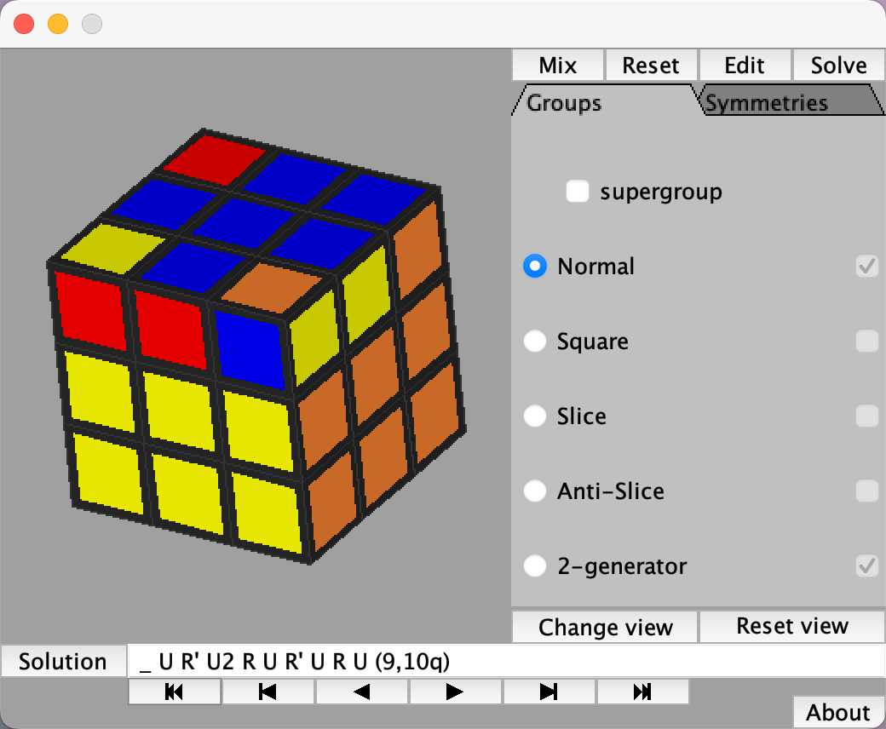

文章灵感来源于：
- https://zhuanlan.zhihu.com/p/76038006
- 并参考了：https://www.gap-system.org/Doc/Examples/rubik.html
- 使用了这里的小程序：https://www.jaapsch.net/puzzles/cubie.htm
先汇制一张，魔方图
+--------------+
| 1 2 3 |
| 4 top 5 |
| 6 7 8 |
+--------------+--------------+--------------+--------------+
| | 8 | 8 5 3 | |
| left | front 9 | 9 right 13 | rear |
| | 10 | 10 11 12 | |
+--------------+--------------+--------------+--------------+
| |
| bottom |
| |
+--------------+
这里做了几个简化
- 同一个块的两个棱或三个角，不做区分，视为同一数字
- 仅考虑顶部和右手边的图块，主要是顶部和8、9、10，这是我拼魔方经常研究的地方
这里仅研究，1-10 这10个块的还原方法
让我们参考 gap 的程序，来建立模型
创建一个群
gap> cube := Group((1,3,8,6)(2,5,7,4),(8,3,12,10)(5,13,11,9));
Group([ (1,3,8,6)(2,5,7,4), (3,12,10,8)(5,13,11,9) ])
- 这里通过Group构造了一个群，由置换构造而来的群
- 比如：这里(1,3,8,6)的置换，表示顶部4个角块的一次置换
- 所以这个群，只有两元素
- 一个是(1,3,8,6)(2,5,7,4) 两个置换组合而成的TOP的转换，这里命名为 U ，（参考：http://www.rubik.com.cn/notation.htm ）
- 一个是(8,3,12,10)(5,13,11,9)，两个置换组合而成的RIGHT的转换，这里命名为 R
- 群里只有乘法一种运算，表示为置换的乘法
- 比如 U*U=U^2 => (1,3,8,6)(2,5,7,4) = (1,8)(3,6)(2,7)(5,4)
简化旋转的表示方法
gap> f := FreeGroup("U", "R");
<free group on the generators [ U, R ]>
gap> hom := GroupHomomorphismByImages( f, cube, GeneratorsOfGroup(f), GeneratorsOfGroup(cube) );
[ U, R ] -> [ (1,3,8,6)(2,5,7,4), (3,12,10,8)(5,13,11,9) ]
- FreeGroup(“U”, “R”)是创建了两个元素的群，为了简化cube中两个元素的表示，分别代表Top、Right的旋转
- GroupHomomorphismByImages是表示创建群同态，将U、R用于表示cube中定义的两个旋转
做一些测试
- 比如我们要实现 5、9 两个块的交换，即实现 (5,9)
gap> pre := PreImagesRepresentative(hom, (5,9)); U^-1*R*U^2*R^-1*U^-1*R*U^-1*R^-1*U^-1*R*U*R^-1*U*R*U^-2*R^-1*U*R*U^-1*R^-1*U^-2*R*U^-1*R^-1*U^-1*R*U*R^-1*U^-1 - PreImagesRepresentative用于群的求解，计算出(5,9)的计算公式
-
答案也很好理解，比如：U、U^2、U^-1 分别表示 U的一次、两次、三次旋转
- 按照公式可逆旋转一次，验证一下
gap> v := Image(hom, pre); (2,4)(5,9) - 结果是 (2,4), (5,9) 两个置换，符合预期。 因为(5,9)无法单独置换
在gap中使用 U、R 的转换标识
gap> U:=f.1;
gap> R:=f.2;
gap> Image(hom, R*U^-1*R^-1*U^-1*R*U^-1*R^-1*U*R*U*R^-1*U);
(1,8)(2,4)(3,6)(5,9)
可以自行构造转换方案来计算转换结果，可以用于批量验证自己的想法
然后，精彩来了…
枚举所有的转动可能
for x in cube do
if LargestMovedPoint(x) <=7 then
f := PreImagesRepresentative( hom, x);
Print(LargestMovedPoint(x), " ", x, "\t===>\t", Length(f), "\t", f, "\n");
fi;
od;
- 这里我们枚举了cube中所有可能
- LargestMovedPoint(x)是判断x中数字的最大值，7表示，我们只考虑1-7这7个数字转动的情况
- 然后进行求解公式，并打出来
- Length(zz)表示求解公式的步数，几步可以转动完成
我们将看到这样的结果
0 () ===> 0 <identity ...>
7 (4,7,5) ===> 10 U^-1*R^-1*U^-1*R*U^-1*R^-1*U^-2*R*U^-1
7 (4,5,7) ===> 10 U*R^-1*U^2*R*U*R^-1*U*R*U
7 (2,5,7) ===> 10 R*U*R^-1*U*R*U^-2*R^-1*U^-2
5 (2,5,4) ===> 10 U*R*U*R^-1*U*R*U^-2*R^-1*U
7 (2,5)(4,7) ===> 18 U^-1*R*U^2*R^-1*U^-1*R*U^-1*R^-2*U^2*R*U*R^-1*U*R*U
7 (2,7,5) ===> 10 R^-1*U^-1*R*U^-1*R^-1*U^-2*R*U^-2
7 (2,7,4) ===> 20 U*R*U*R^-1*U*R*U^-2*(R^-1*U^2)^2*R*U*R^-1*U*R*U
7 (2,7)(4,5) ===> 20 (U*R*U*R^-1*U*R*U^-2*R^-1)^2*U^-2
7 (2,4,7) ===> 20 U^-1*R*U^2*R^-1*U^-1*R*U^-1*R^-1*U^-1*R*U*R^-1*U*R*U^-2*R^-1*U^-2
5 (2,4,5) ===> 10 U^-1*R*U^2*R^-1*U^-1*R*U^-1*R^-1*U^-1
7 (2,4)(5,7) ===> 20 U^-1*R*U^2*(R^-1*U^-1*R*U^-1*R^-1*U^-1)^2*U^-1*R*U^-2
- 举个例子
- 要转换实现(4,7,5)，这样三个棱块的转换，可以使用
U^-1*R^-1*U^-1*R*U^-1*R^-1*U^-2*R*U^-1这个公式 - 我们使用下面的JS方法，做个转换
'U^-1*R^-1*U^-1*R*U^-1*R^-1*U^-2*R*U^-1'.replaceAll('*', ' ').replaceAll(/\((.*)\)\^2/g, "$1 $1").replaceAll('^-1', "'").replaceAll("^2", "2").replaceAll("^-2", "2");答案是：U’ R’ U’ R U’ R’ U2 R U’ (参考 http://www.rubik.com.cn/notation.htm 这里的表示法)
- 下面是转换小工具
- 要转换实现(4,7,5)，这样三个棱块的转换，可以使用
输入：
输出：
我们验证一下
我们使用这个工具进行验证，https://www.jaapsch.net/puzzles/cubie.htm 或者自己拿魔方验证一下，  验证通过
校验更多
刚才的公式，我们挑选一部进行校验
(4,7,5) => U' R' U' R U' R' U2 R U'
(4,5,7) => U R' U2 R U R' U R U
(2,7,5) => R' U' R U' R' U2 R U2
(2,5,7) => R U R' U R U2 R' U2
(2,5,4) => U R U R' U R U2 R' U
(2,4,5) => U' R U2 R' U' R U' R' U'
(2,7,4) => U R U R' U R U2 R' U2 R' U2 2 R U R' U R U
(2,7)(4,5) => U R U R' U R U2 R' U R U R' U R U2 R' U2
(2,4)(5,7) => U' R U2 R' U' R U' R' U' R' U' R U' R' U' U' R U2
(2,5)(4,7) => U' R U2 R' U' R U' R2 U2 R U R' U R U
这些公式，再结合看看 http://www.rubik.com.cn/beginner2.htm ，我们能发现更多的魔方公式
再计算和校验
这里只计算了一些步数比较小的，比较有研究价值
for x in cube do
f := PreImagesRepresentative( hom, x);
if LargestMovedPoint(x) = 8 and Length(f) <= 10 then
Print(LargestMovedPoint(x), " ", x, "\t===>\t", Length(f), "\t", f, "\n");
fi;
od;
结果：
8 (1,6,8,3)(2,4,7,5) ===> 1 U'
8 (1,6,8,3)(2,4,5,7) ===> 9 U R U2 R' U' R U' R'
8 (1,6,8,3)(2,4) ===> 9 U R' U2 R U R' U R
8 (1,6,8,3)(4,7) ===> 9 R U R' U R U2 R' U
8 (1,6,8,3)(5,7) ===> 9 U R U R' U R U2 R'
8 (1,8)(2,7)(3,6)(4,5) ===> 2 U2
8 (1,8)(2,7,4)(3,6) ===> 10 U R U2 R' U' R U' R' U'
8 (1,8)(2,7,5)(3,6) ===> 10 U R' U2 R U R' U R U'
8 (1,8)(2,4,5)(3,6) ===> 8 R U R' U R U2 R'
8 (1,8)(2,4,7)(3,6) ===> 10 U R U R' U R U2 R' U'
8 (1,8)(3,6)(4,5,7) ===> 8 R' U' R U' R' U2 R
8 (1,8)(3,6)(4,7,5) ===> 8 R' U2 R U R' U R
8 (1,8)(2,5,4)(3,6) ===> 8 R U2 R' U' R U' R'
8 (1,8)(2,5,7)(3,6) ===> 10 U R' U' R U' R' U2 R U'
8 (1,3,8,6)(2,5,7,4) ===> 1 U
8 (1,3,8,6)(2,7,5,4) ===> 9 R U R' U R U2 R' U'
8 (1,3,8,6)(2,4) ===> 9 R' U' R U' R' U2 R U'
8 (1,3,8,6)(5,7) ===> 9 R U2 R' U' R U' R' U'
8 (1,3,8,6)(4,7) ===> 9 U' R U2 R' U' R U' R'
for x in cube do
f := PreImagesRepresentative( hom, x);
if LargestMovedPoint(x) = 9 then
Print(LargestMovedPoint(x), " ", x, "\t===>\t", Length(f), "\t", f, "\n");
fi;
od;
举两个比较特殊的例子
(1,3,8,6)(2,5)(4,7,9) => R U' R' U2 R U2 R'
(1,6,8,3)(2,9,5)(4,7) => R U2 R' U2 R U R'
计算更多可能
我们来打印出各种可能（只看1-10的变换）
for x in cube do
f := PreImagesRepresentative( hom, x);
if LargestMovedPoint(x) <= 10 then
Print(x, " => ", f, "\n");
fi;
od;
通过以下程序转换
package test;
import java.io.IOException;
import java.nio.file.Files;
import java.nio.file.Path;
import java.util.List;
public class Main {
public static void main(String[] args) throws IOException {
List<String> lines = Files.readAllLines(Path.of("input.txt"));
List<String> result = lines.stream().map(s -> s.replace('*', ' ').replaceAll("\\((.+)\\)\\\\^2", "$1 $1").replace("^-1", "'").replace("^2", "2").replace("^-2", "2")).toList();
System.out.println(String.join("\n", result));
}
}
得到：
(5,7,9) => R U' R' U R U R' U U R U R' U R' U' R U' R' U2 R U'
(5,9,7) => U R' U2 R U R' U R U' R U' R' U' U' R U' R' U' R U R'
(4,7,9) => U R U R' U R U2 R' U R' U' R U' R' U2 R U' U' R U' R' U2 R U' U' R' U'
(4,7)(5,9) => U R U R' U R U2 R' U2 R' U2 R U R' U R2 U' R' U2 R U' R' U' R U R' U'
(4,7,5) => U' R' U' R U' R' U2 R U'
(4,9,7) => U R U R' U R U2 R' U R' U' R U' R' U2 R R U' R' U2 R U' R' U' R U R'
(4,9,5) => U R U2 R' U2 R U R'
(4,9)(5,7) => U R' U2 R U R' U R U R U' R' U2 R U2 R' U'
(4,5,7) => U R' U2 R U R' U R U
(4,5,9) => R U' R' U2 R U2 R' U'
(4,5)(7,9) => U2 R U' R' U2 R U' R' U' R U R'
(3,8)(5,9,7)(6,10) => U' R U R'
(3,8)(5,7,9)(6,10) => R U' R' U
(3,8)(6,10) => U R' U2 R U R' U R U' R U' R' U2 R U' R'
(3,8)(4,7)(5,9)(6,10) => U R' U2 R U R' U R U R U' R' U
(3,8)(4,7,9)(6,10) => R U' R2 U' R U' R' U2 R U'
(3,8)(4,7,5)(6,10) => U2 R U' R' U2 R U' R'
(3,8)(4,5,9)(6,10) => R' U' R U' R' U2 R U' U2 R U' R' U2 R U' R' U' R U' R' U'
(3,8)(4,5)(6,10)(7,9) => U R U R' U R U2 R' U R' U' R U' R' U2 R U R U R'
(3,8)(4,5,7)(6,10) => R U R' U2 R U R' U2
(3,8)(4,9,7)(6,10) => U R' U2 R U R' U R2 U R'
(3,8)(4,9)(5,7)(6,10) => U R U R' U R U2 R' U2 R' U2 R U R' U R2 U' R' U' U' R U' R' U' R U' R' U'
(3,8)(4,9,5)(6,10) => U R U R' U R U R' U U R U R' U U2 R' U2 R U R' U R
(3,10,8,6)(7,9) => R U R' U R U2 R' U R U' R' U' R U2 R' U' R U R'
(3,10,8,6)(5,7) => R U2 R' U R U R' U' R U2 R' U' R U' R'
(3,10,8,6)(5,9) => U R U R' U R U2 R' U R' U' R U' R' U' U' R U' R U R' U'
(3,10,8,6)(4,7,5,9) => U' R U2 R' U' R U' R' U R U' R' U' R U' U' R' U' R U' R' U'
(3,10,8,6)(4,7,9,5) => U R' U2 R U R' U R U2 R U R' U'
(3,10,8,6)(4,7) => R U' R' U2 R U' R' U'
(3,10,8,6)(4,9) => U R U R' U2 R' U' R U' R' U2 R U'
(3,10,8,6)(4,9,7,5) => U R U R' U R U' U2 R' U' R U2 R' U' R U R'
(3,10,8,6)(4,9,5,7) => U R U R' U'
(3,10,8,6)(4,5,7,9) => R U R' U R U R' U' R' U' R U' R' U2 R U2 R U2 R' U' R U' R' U'
(3,10,8,6)(4,5,9,7) => U' R U2 R' U' R U' R2 U2 R U R' U R2 U' R' U' R U2 R' U' R U R'
(3,10,8,6)(4,5) => R U2 R' U R U' R' U' R U' R' U'
(3,6,8,10)(4,7,5,9) => U R U' R' U'
(3,6,8,10)(4,7) => U R U R' U2 R U R'
(3,6,8,10)(4,7,9,5) => R U' R' U R U2 R' U R U R2 U' R U' R' U2 R2 U R' U R U2 R' U
(3,6,8,10)(7,9) => R U' R' U R U2 R' U R U R' U' R U2 R' U' R U' R'
(3,6,8,10)(5,9) => U R U' R' U R' U U R U R' U R U' R U2 R' U' R U' R' U'
(3,6,8,10)(5,7) => R U R' U R U2 R' U R U' R' U' R U2 R'
(3,6,8,10)(4,5) => U R U R' U R U R' U' R U2 R'
(3,6,8,10)(4,5,9,7) => U R U' R' U2 R' U' R U' R' U2 R U'
(3,6,8,10)(4,5,7,9) => R U' R' U R U2 R' U R U2 U R' U' R U' R' U'
(3,6,8,10)(4,9) => U R' U2 R U R' U R U2 R U' R' U'
(3,6,8,10)(4,9,7,5) => U R U R' U R U2 R' U2 R' U2 R U R' U R U R U' R' U' R U' R'
(3,6,8,10)(4,9,5,7) => U' R U2 R' U' R U' R' U R U' R' U' R U2 R' U' R U R' U'
(2,5,9) => R U R' U R U2 R' U R U' R' U2 R U2 R'
(2,5)(7,9) => U' R U2 R' U' R U' R' U2 U' R U' R' U2 R U' R' U' R U R'
(2,5,7) => R U R' U R U2 R' U2
(2,5,9,7,4) => U' R U2 R' U' R U' R' U' R' U' R U' R' U' U' R2 U' R' U2 R U' R' U' R U R'
(2,5,4) => U R U R' U R U2 R' U
(2,5,7,9,4) => U' R U2 R' U' R U' R' U' R' U' R U' R' U2 R U' U' R U' R' U2 R U' U' R' U'
(2,5,9,4,7) => U R U' R' U R U R' U2 R U R2 U' R U' R' U2 R U'
(2,5,4,7,9) => U R U R' U R U R' U2 R U2 R'
(2,5)(4,7) => U' R U2 R' U' R U' R2 U2 R U R' U R U
(2,5,7,4,9) => U' R U2 R' U' R U' R2 U2 R U R' U R2 U' R' U2 R U2 R'
(2,5)(4,9) => U' R U2 R' U' R U' R' U' R U' R' U2 R U2 R' U'
(2,5,4,9,7) => U R U2 R' U2 R U R' U2 R' U2 R U R' U R
(2,5,7)(3,8)(6,10) => R U R' U2 R U R' U U2 R U R' U R U2 R' U
(2,5)(3,8)(6,10)(7,9) => R' U' R U' R' U2 R U R U R'
(2,5,9)(3,8)(6,10) => U' R U R' U U R' U U R U R' U R
(2,5)(3,8)(4,9)(6,10) => U' R U2 R' U' R U' R' U' R' U' R U' R' U' U' R U' U2 R U' R' U2 R U' R' U' R U' R' U'
(2,5,7,4,9)(3,8)(6,10) => U R U R' U R U R' U2 R U R2 U' R U' R' U2 R U'
(2,5,4,9,7)(3,8)(6,10) => U R U R' U R U2 R' U R U R' U R U2 R' U R U R'
(2,5,9,7,4)(3,8)(6,10) => U2 U R U R' U R U R' U R U2 R' U
(2,5,7,9,4)(3,8)(6,10) => R U' R' U2 R U R' U R U2 R' U
(2,5,4)(3,8)(6,10) => R U R' U2 R U R' U R' U' R U' R' U2 R2 U R' U R U2 R' U
(2,5)(3,8)(4,7)(6,10) => R' U' R U' R' U2 R R U' R' U2 R U' R'
(2,5,9,4,7)(3,8)(6,10) => U' R U2 R' U' R U' R' U' U' R U' R' U' U' R U' R' U' R U' R' U'
(2,5,4,7,9)(3,8)(6,10) => R U' R2 U' R U' R' U2 R2 U R' U R U2 R' U
(2,5,9,7)(3,10,8,6) => R' U' R U' R' U2 R U' U2 R U' R' U' R U2 R' U' R U R'
(2,5,7,9)(3,10,8,6) => R U R' U R U R' U' R' U' R U' R' U2 R U'
(2,5)(3,10,8,6) => R U2 R' U R U R' U
(2,5,9)(3,10,8,6)(4,7) => U' R U2 R' U' R U' R' U R U' R'
(2,5,4,7)(3,10,8,6) => R U R' U R U' U' R' U2 R U' R' U2 R U' R' U'
(2,5)(3,10,8,6)(4,7,9) => R U R' U R U R' U U R' U U R U R' U R U R U R' U R U2 R' U
(2,5,9,4)(3,10,8,6) => R' U' R U' R' U2 R2 U' R' U' R U' U' R' U' R U' R' U'
(2,5,4)(3,10,8,6)(7,9) => R U R' U R U R' U U R U2 R' U' R U' R'
(2,5,7,4)(3,10,8,6) => U R U R' U R U2 R' U R U' R' U2 R U' R' U'
(2,5,7)(3,10,8,6)(4,9) => U R U2 R' U R U2 R' U
(2,5)(3,10,8,6)(4,9,7) => U R U R' U R' U2 R U R' U R
(2,5,4,9)(3,10,8,6) => U' R U2 R' U' R U' R' U' R' U' R U' R' U' U' R2 U' R'
(2,5,7,4)(3,6,8,10) => U R' U2 R U R' U R2 U' R' U' R U2 R'
(2,5,4)(3,6,8,10)(7,9) => U' R U2 R' U' R U' R' U' R U R' U R U2 R' U' U' R U' R' U' R U' R'
(2,5,9,4)(3,6,8,10) => U R U' R' U R' U U R U R' U R
(2,5,7)(3,6,8,10)(4,9) => U R U R' U R U2 R' U R U R' U R U2 R' U' R U' R' U'
(2,5)(3,6,8,10)(4,9,7) => U' R U2 R' U' R U' R' U' R' U' R U' R' U' U' R U' U' R U' R' U' R U' R'
(2,5,4,9)(3,6,8,10) => R U R' U R U R' U' R U R'
(2,5,7,9)(3,6,8,10) => R U' R' U R U2 R' U R U R' U
(2,5)(3,6,8,10) => U' R U' R' U' R U2 R'
(2,5,9,7)(3,6,8,10) => U' R U2 R' U' R U' R' U' R U' R' U' R U' R'
(2,5,9)(3,6,8,10)(4,7) => U2 R U2 R' U
(2,5)(3,6,8,10)(4,7,9) => R' U' R U' R' U' U' R U' R U' R' U'
(2,5,4,7)(3,6,8,10) => U R U R' U U R U R' U R U R' U R U2 R' U
(2,9,7)(3,8)(6,10) => R U R' U R U2 R' U R U R'
(2,9,5)(3,8)(6,10) => R' U' R U' R' U2 R U2 R U' R' U
(2,9)(3,8)(5,7)(6,10) => R' U' R U' R' U2 R U2 R U' R' U' R U' U' R' U' R U' R'
(2,9,4)(3,8)(6,10) => R U R' U R U U R' U R U R' U2 R U2 R' U' R U' R' U R U R' U R U2 R' U
(2,9,7,5,4)(3,8)(6,10) => U R U R' U R U' R'
(2,9,5,7,4)(3,8)(6,10) => U R U R' U R U2 R' U2 R' U2 R U R' U R U R U' R' U
(2,9)(3,8)(4,7)(6,10) => U R U R' U R U2 R' U2 R' U2 R U R' U R U R U' R' U' R U' U' R' U' R U' R'
(2,9,5,4,7)(3,8)(6,10) => R U R' U R U U R' U R U R' U' R' U' R U' R' U2 R U'
(2,9,4,7,5)(3,8)(6,10) => U R' U2 R U R' U R2 U' R' U' U' R U' R' U' R U' R' U'
(2,9,7,4,5)(3,8)(6,10) => U' R U2 R' U' R U' R2 U2 R U R' U R2 U R'
(2,9,4,5,7)(3,8)(6,10) => U' R U' R' U' U' R U' R' U' R U' R' U'
(2,9)(3,8)(4,5)(6,10) => U R U R' U R U2 R' U R U R' U R U2 R' U2 R U' R' U' R U' U' R' U' R U' R'
(2,9,5,7)(3,10,8,6) => U' R U2 R' U' R U' R' U' R U R' U R U2 R' U' R U R' U'
(2,9,7,5)(3,10,8,6) => U' R U' R' U' R U2 R' U' R U R'
(2,9)(3,10,8,6) => U R U R' U R U2 R' U R' U' R U' R' U2 R2 U' R'
(2,9)(3,10,8,6)(4,5,7) => U2 R U' R'
(2,9,4,5)(3,10,8,6) => R U' R' U R U' R' U' R U' R'
(2,9,7)(3,10,8,6)(4,5) => R U' R' U R U R' U R' U' R U' R' U2 R U'
(2,9,4)(3,10,8,6)(5,7) => U2 R U' R' U' R U' U' R' U' R U' R' U'
(2,9,7,4)(3,10,8,6) => U R' U2 R U R' U R2 U' R' U' R U2 R' U' R U R'
(2,9,5,4)(3,10,8,6) => U' R U2 R' U' R U' R' U' R' U' R U' R' U' U' R U' R U R' U'
(2,9,4,7)(3,10,8,6) => R U' R' U R U R' U2
(2,9,5)(3,10,8,6)(4,7) => U' R U2 R' U2
(2,9)(3,10,8,6)(4,7,5) => U R' U2 R U R' U R U' R U' R'
(2,9,5) => R U2 R' U2 R U R' U' R U2 R' U' R U' R'
(2,9)(5,7) => R' U' R U' R' U2 R U2 U' R U' R' U2 R U2 R'
(2,9,7) => R U2 R' U2 R U R' U
(2,9,4,5,7) => R U R' U R U' U' R' U2 R U' R' U2 R U2 R' U'
(2,9,7,4,5) => R U2 R' U2 R U' R' U' R U' R' U'
(2,9)(4,5) => U R U R' U R U2 R' U R U R' U R U2 R' U R U' R' U2 R U2 R'
(2,9)(4,7) => U R U R' U R U2 R' U2 R' U2 R U R' U R2 U' R' U2 R U2 R'
(2,9,4,7,5) => R U2 R' U2 R U R2 U' R U' R' U2 R2 U R' U R U2 R' U
(2,9,5,4,7) => R U2 R' U2 R U R2 U' R U' R' U2 R U'
(2,9,5,7,4) => U' R U2 R' U' R U' R2 U2 R U R' U R2 U' R' U2 R U' R' U' R U R' U'
(2,9,4) => U R U R' U R U2 R' U R U' R' U2 R U2 R' U'
(2,9,7,5,4) => R U U R' U2 R U R' U2 R U R' U R U2 R' U
(2,9,4)(3,6,8,10)(5,7) => U R U R' U R U2 R' U2 R U' R' U'
(2,9,5,4)(3,6,8,10) => R U R2 U2 R U R' U R
(2,9,7,4)(3,6,8,10) => R U' R' U' R U' R' U' R U2 R' U' R U' R' U'
(2,9)(3,6,8,10) => R U R2 U2 R U R' U R U' R U2 R' U' R U' R' U'
(2,9,5,7)(3,6,8,10) => R U R' U R' U' R U' R' U2 R2 U R' U R U2 R' U
(2,9,7,5)(3,6,8,10) => U R' U2 R U R' U R U R U' R' U' R U' R'
(2,9,7)(3,6,8,10)(4,5) => R U' R' U' R U' R'
(2,9)(3,6,8,10)(4,5,7) => R U R' U R' U' R U' R' U2 R U'
(2,9,4,5)(3,6,8,10) => R U R2 U U R U R' U R U R U R' U R U2 R' U
(2,9,4,7)(3,6,8,10) => R U R' U R U2 R' U' R U' R' U'
(2,9,5)(3,6,8,10)(4,7) => R U R' U' R U R' U R U2 R' U
(2,9)(3,6,8,10)(4,7,5) => R U R' U2
(2,7)(3,8)(5,9)(6,10) => R U R' U R U2 R' U2 R U' R' U
(2,7,5)(3,8)(6,10) => U' R U2 R' U' R U' R' U2 U' R U' R' U2 R U' R'
(2,7,9)(3,8)(6,10) => R U' R' U' R U' U' R' U' R U' R'
(2,7,4)(3,8)(6,10) => R U R' U2 R U' R' U' R U' R'
(2,7,9,5,4)(3,8)(6,10) => U R U R' U R U2 R' U R U' R' U
(2,7,5,9,4)(3,8)(6,10) => U' R U R' U2 R U2 R' U' R U' R' U R U R' U R U2 R' U
(2,7,4,5,9)(3,8)(6,10) => U R' U2 R U R' U R U R U' R' U' R U' U' R' U' R U' R'
(2,7)(3,8)(4,5)(6,10) => U' R U2 R' U' R U' R' U' R U R' U R U R' U2 R U' R'
(2,7,9,4,5)(3,8)(6,10) => R U R' U R U2 R' U R U' R' U' U' R U' R' U' R U' R' U'
(2,7,4,9,5)(3,8)(6,10) => U' R U2 R' U' R U' R2 U2 R U R' U R U R U' R' U
(2,7)(3,8)(4,9)(6,10) => U R U R' U R U R' U' U' R U' R' U' R U' R' U'
(2,7,5,4,9)(3,8)(6,10) => U R U R' U R U R' U U R U R' U
(2,7)(3,10,8,6) => R U2 R' U R U R' U2 U R' U2 R U R' U R
(2,7,9,5)(3,10,8,6) => R U R' U R U R' U R U R' U R U2 R' U
(2,7,5,9)(3,10,8,6) => U' R U2 R' U' R U' R2 U2 R U R' U R U' R U' R'
(2,7,4)(3,10,8,6)(5,9) => U R U R' U R U2 R' U2 R U R' U'
(2,7,5,4)(3,10,8,6) => U' R U2 R' U' R U' R' U' R' U' R U' R' U2 R U' U' R U' R' U2 R U' R' U'
(2,7,9,4)(3,10,8,6) => R U R' U R U R' U' R U2 R' U' R U' R' U'
(2,7,4,9)(3,10,8,6) => U R U R' U R U2 R' U' R U' R'
(2,7)(3,10,8,6)(4,9,5) => R U R' U R U2 R' U' R U R' U'
(2,7,5)(3,10,8,6)(4,9) => U R U R' U R U2 R' U' R U' R' U' R U2 R' U' R U' R' U'
(2,7)(3,10,8,6)(4,5,9) => U R U' R' U R U2 R' U R U R' U R' U' R U' R' U2 R U'
(2,7,4,5)(3,10,8,6) => U' R U2 R' U' R U' R' U' R U' R' U' U' R U' R' U'
(2,7,9)(3,10,8,6)(4,5) => R U R' U R U R'
(2,7,9) => U' R U' R' U2 R U2 R'
(2,7,5) => R' U' R U' R' U2 R U2
(2,7)(5,9) => U' R U' R' U' U' R U' R' U' R U R' U'
(2,7,4) => U R U R' U R U2 R' U2 R' U2 R U R' U R U
(2,7,5,9,4) => U R U' R' U R U R' U U R U R' U U R U R' U R U2 R' U
(2,7,9,5,4) => R U' R' U R U R' U2 R U' R' U' R U' R'
(2,7)(4,9) => U R U R' U R U2 R' U R U R' U R U2 R' U2 R U' R' U2 R U2 R' U'
(2,7,5,4,9) => U R U U R' U2 R U R' U2 R U2 R' U' R U' R'
(2,7,4,9,5) => U R' U2 R U R' U R2 U' R' U2 R U' R' U' R U R' U'
(2,7,4,5,9) => U R' U2 R U R' U R2 U' R' U2 R U2 R'
(2,7,9,4,5) => R' U' R U' R' U2 R U' U' R U' R' U2 R U' U' R' U'
(2,7)(4,5) => U R U R' U R U2 R' U R U R' U R U2 R' U2
(2,7,9,4)(3,6,8,10) => U' R U2 R' U' R U' R' U' R' U' R U' R' U' U' R U' R U' R' U'
(2,7,4)(3,6,8,10)(5,9) => U2 R U' R' U' R U2 R' U' R U R' U'
(2,7,5,4)(3,6,8,10) => U R U R' U R U2 R' U R U R' U R U2 R' U R U' R' U' R U2 R'
(2,7,9)(3,6,8,10)(4,5) => U R' U2 R U R' U R U' R U' R' U' R U R'
(2,7)(3,6,8,10)(4,5,9) => U R U' R' U R U2 R' U' R U' R'
(2,7,4,5)(3,6,8,10) => U R U R' U U R U R' U U R U2 R' U' R U' R'
(2,7,5)(3,6,8,10)(4,9) => U' R U2 R' U' R U2 R' U'
(2,7,4,9)(3,6,8,10) => U2 R U' R' U' R U R'
(2,7)(3,6,8,10)(4,9,5) => U R' U2 R U R' U R U' R U' R' U' R U2 R' U' R U R' U'
(2,7,9,5)(3,6,8,10) => R U' R' U R U2 R' U R U R' U2 U R' U2 R U R' U R
(2,7)(3,6,8,10) => R' U' R U' R' U2 R U' U2 R U' R' U' R U2 R'
(2,7,5,9)(3,6,8,10) => U R U' R' U R U2 R' U' R U' R' U R U R' U R U2 R' U
(2,4,7,9,5) => R U' R' U R U R' U2 R U R' R' U2 R U R' U R U R U R' U R U2 R' U
(2,4,7) => U' R U2 R' U' R U' R' U' R U R' U R U2 R' U2
(2,4,7,5,9) => U' R U2 R' U' R U' R' U' R' U' R U' R' U2 R U2 U' R U' R' U2 R U2 R'
(2,4,5) => U' R U2 R' U' R U' R' U'
(2,4,5,7,9) => U' R U2 R' U' R U' R' U' U' R U' R' U' U' R U2 R'
(2,4,5,9,7) => R U R' U R U R' U2 R U' R' U' R U R'
(2,4,9,7,5) => U' R U2 R' U' R U' R2 U2 R U R' U R U' R U' R' U' U' R U' R' U' R U R'
(2,4,9,5,7) => U' R U2 R' U' R U' R' U' U' R U' R' U' U' R U' R' U' R U R' U'
(2,4,9) => U R U2 R' U2 R U R' U' R U2 R' U' R U' R' U'
(2,4)(7,9) => U R U R' U R U2 R' U' R U' R' U' U' R U' R' U' R U R'
(2,4)(5,9) => U' R U2 R' U' R U' R' U' R U R' U R U2 R' U R U' R' U2 R U' R' U' R U R' U'
(2,4)(5,7) => U' R U2 R' U' R U' R' U' R' U' R U' R' U' U' R U2
(2,4,7,5)(3,6,8,10) => U R U R' U2 R U R' U' R U2 R' U' R U' R' U'
(2,4,7)(3,6,8,10)(5,9) => U R U' R' U2 R U2 R' U' R U' R' U'
(2,4,7,9)(3,6,8,10) => R U' R' U R U2 R' U R U R2 U' R U' R' U2 R U'
(2,4,9,5)(3,6,8,10) => U R U R' U R U U R' U R U R2 U2 R U R' U R
(2,4,9)(3,6,8,10)(5,7) => U R U R' U R U U R' U R U R' U2
(2,4,9,7)(3,6,8,10) => U R U R' U R U2 R' U R U' R' U' R U' R'
(2,4,5)(3,6,8,10)(7,9) => R U R' U R U2 R' U' U' R U' R' U' R U' R'
(2,4,5,7)(3,6,8,10) => U' R U2 R' U' R U' R' U' R' U' R U' R' U' U' R U R U' R' U' R U2 R'
(2,4,5,9)(3,6,8,10) => U R U' R' U R' U U R U R' U R U R U R' U R U2 R' U
(2,4)(3,6,8,10) => U' R U2 R' U' R U' R' U' U' R U' R' U' R U2 R'
(2,4)(3,6,8,10)(5,9,7) => U' R U2 R' U' R U' R2 U2 R U R' U R U R U' R' U' R U' R'
(2,4)(3,6,8,10)(5,7,9) => R' U' R U' R' U2 R2 U' R' U' R U2 R' U' R U R' U'
(2,4,7,9)(3,10,8,6) => U R U R' U R U2 R' U R U R' U R U R'
(2,4,7)(3,10,8,6)(5,9) => U R U' R' U R U2 R' U R U R' U2
(2,4,7,5)(3,10,8,6) => R U2 R' U R U R2 U' R U' R' U2 R U'
(2,4)(3,10,8,6)(5,9,7) => U R U' R' U R U2 R' U R U R2 U2 R U R' U R
(2,4)(3,10,8,6) => R U2 R' U R U R' U U R U R' U R U2 R' U
(2,4)(3,10,8,6)(5,7,9) => U R U R' U R U2 R' U2 R' U2 R U R' U R U2 R U R' U'
(2,4,9,5)(3,10,8,6) => R' U' R U' R' U' U' R U' R U R' U'
(2,4,9,7)(3,10,8,6) => U R U R' U R' U U R U R' U R U R U R' U R U2 R' U
(2,4,9)(3,10,8,6)(5,7) => U R U R' U2 R U2 R' U' R U' R' U'
(2,4,5,9)(3,10,8,6) => R' U' R U' R' U2 R2 U' R'
(2,4,5)(3,10,8,6)(7,9) => R U R' U R U R' U U R U2 R' U' R U' R' U R U R' U R U2 R' U
(2,4,5,7)(3,10,8,6) => R U2 R' U R U R' U' R U2 R' U' R U' R' U' R U2 R' U' R U' R' U'
(2,4,5,9,7)(3,8)(6,10) => U' R U R' U' R U2 R' U' R U' R' U'
(2,4,5,7,9)(3,8)(6,10) => R U R' U' R U' R' U'
(2,4,5)(3,8)(6,10) => U' R U2 R' U' R U' R2 U2 R U R' U R U' R U' R' U2 R U' R'
(2,4,7,9,5)(3,8)(6,10) => U' R U2 R' U' R U' R' U' R U' R' U
(2,4,7,5,9)(3,8)(6,10) => U' R U R' U' R' U' R U' R' U2 R U2 R U2 R' U' R U' R' U'
(2,4,7)(3,8)(6,10) => R U R' U R U R' U2 R U' R'
(2,4)(3,8)(5,7)(6,10) => U R U R' U R U2 R' U' R U' R' U2 R U' R'
(2,4)(3,8)(5,9)(6,10) => U' R U2 R' U' R U' R' U' R' U' R U' R' U' U' R U' U' R U' R' U
(2,4)(3,8)(6,10)(7,9) => U' R U2 R' U' R U' R' U' R' U' R U' R' U' U' R U R U R'
(2,4,9,7,5)(3,8)(6,10) => U' R U2 R' U' R U' R' U2 R U R'
(2,4,9)(3,8)(6,10) => U' R U2 R' U' R U' R' U' R U R' U R U2 R' U2 R U' R' U' R U' U' R' U' R U' R'
(2,4,9,5,7)(3,8)(6,10) => U' R U2 R' U' R U' R' U' R U R' U R U2 R' U2 R U' R' U
(1,6,8,3)(2,4,7,5) => U'
(1,6,8,3)(2,4,7,9) => U R' U2 R U R' U R U' R U' R' U2 R U2 R'
(1,6,8,3)(2,4,7)(5,9) => U R' U2 R U R' U R U' R U' R' U' U' R U' R' U' R U R' U'
(1,6,8,3)(2,4,5)(7,9) => R U' R' U R U R' U U R U R' U U2 R' U2 R U R' U R
(1,6,8,3)(2,4,5,9) => U R U' R' U R U R' U2 R U R' U' R' U' R U' R' U2 R U'
(1,6,8,3)(2,4,5,7) => U R U2 R' U' R U' R'
(1,6,8,3)(2,4,9,5) => U R U U R' U2 R U R' U R' U2 R U R' U R
(1,6,8,3)(2,4,9)(5,7) => U2 R U' R' U2 R U2 R'
(1,6,8,3)(2,4,9,7) => U R U2 R' U2 R U R' U R U2 R' U' R U' R'
(1,6,8,3)(2,4) => U R' U2 R U R' U R
(1,6,8,3)(2,4)(5,9,7) => U R U R' U R U2 R' U R U R' U R U2 R' U' R U' R' U' U' R U' R' U' R U R'
(1,6,8,3)(2,4)(5,7,9) => R U' R' U R U R' U U R U R' U
(1,6,10,8)(2,4,7)(5,9) => U' R U R' U'
(1,6,10,8)(2,4,7,9) => R U' R'
(1,6,10,8)(2,4,7,5) => R U R' U2 R U R' U' R U2 R' U' R U' R'
(1,6,10,8)(2,4,5,9) => U R' U2 R U R' U R U R U' R'
(1,6,10,8)(2,4,5)(7,9) => R U' R' U2 R U2 R' U' R U' R'
(1,6,10,8)(2,4,5,7) => U2 R U' R' U2 R U' R' U'
(1,6,10,8)(2,4)(5,9,7) => U' R U R' U R' U2 R U R' U R
(1,6,10,8)(2,4)(5,7,9) => R U' R' U2 R' U2 R U R' U R
(1,6,10,8)(2,4) => R U R' U2 R U R' U
(1,6,10,8)(2,4,9,5) => U R' U2 R U R' U R2 U R' U'
(1,6,10,8)(2,4,9,7) => U R U R' U R U R' U2 R U R' U' R' U' R U' R' U2 R U'
(1,6,10,8)(2,4,9)(5,7) => U R U R' U R U2 R' U R' U' R U' R' U2 R U2 R U' R'
(1,6)(2,4,7,9,5)(3,10) => R U R' U R U2 R' U R U' R' U' R U2 R' U' R U R' U'
(1,6)(2,4,7)(3,10) => R U2 R' U R U R' U' R U2 R' U' R U' R' U'
(1,6)(2,4,7,5,9)(3,10) => R U R' U R U2 R' U R U' R' U' R U R'
(1,6)(2,4,5,9,7)(3,10) => U R U R' U R U2 R' U R' U' R U' R' U2 R U' R U' R' U' R U' R'
(1,6)(2,4,5,7,9)(3,10) => R U R' U R U2 R' U R U2 R' U
(1,6)(2,4,5)(3,10) => R' U' R U' R' U2 R U2 R U' R' U' R U2 R'
(1,6)(2,4,9,7,5)(3,10) => U R U' R' U' R U' R'
(1,6)(2,4,9,5,7)(3,10) => U R U R2 U2 R U R' U R
(1,6)(2,4,9)(3,10) => U R U R' U2
(1,6)(2,4)(3,10)(7,9) => U R' U2 R U R' U R U' U' R U' R' U' R U' R'
(1,6)(2,4)(3,10)(5,9) => U' R U2 R' U' R U' R2 U2 R U R' U R2 U' R' U' R U2 R' U' R U R' U'
(1,6)(2,4)(3,10)(5,7) => U R U R' U R U2 R' U2 R' U2 R U R' U R U R U' R' U' R U2 R'
(1,6,3,8,10)(2,4,5,9,7) => U R U' R' U2
(1,6,3,8,10)(2,4,5) => U R U R' U2 R U R' U'
(1,6,3,8,10)(2,4,5,7,9) => U R' U2 R U R' U R U R U' R' U' U' R U' R' U' R U' R'
(1,6,3,8,10)(2,4,7,9,5) => R U' R' U R U2 R' U R U R' U' R U2 R' U' R U' R' U'
(1,6,3,8,10)(2,4,7,5,9) => U R U' R2 U2 R U R' U R
(1,6,3,8,10)(2,4,7) => R U R' U R U2 R' U R U' R' U' R U2 R' U'
(1,6,3,8,10)(2,4)(5,7) => U R U R' U R U R' U' R U2 R' U'
(1,6,3,8,10)(2,4)(5,9) => U R U R' U' R U' R'
(1,6,3,8,10)(2,4)(7,9) => U R U R' U R U2 R' U R' U' R U' R' U' U' R U' R U' R' U2
(1,6,3,8,10)(2,4,9,7,5) => U R' U2 R U R' U R U2 R U' R' U2
(1,6,3,8,10)(2,4,9,5,7) => U R U R' U R U2 R' U2 R' U2 R U R' U R U R U' R' U' R U' R' U'
(1,6,3,8,10)(2,4,9) => R U' R' U' U' R U' R' U' R U' R'
(1,6,8,3)(4,7,5,9) => R U R' U R U2 R' U R U' R' U2 R U2 R' U'
(1,6,8,3)(4,7,9,5) => U' R U2 R' U' R U' R' U2 U' R U' R' U2 R U' R' U' R U R' U'
(1,6,8,3)(4,7) => R U R' U R U2 R' U
(1,6,8,3)(5,9) => U' R U2 R' U' R U' R' U' R' U' R U' R' U' U' R2 U' R' U2 R U' R' U' R U R' U'
(1,6,8,3)(5,7) => U R U R' U R U2 R'
(1,6,8,3)(7,9) => U' R U2 R' U' R U' R2 U2 R U R' U R U2 R U' R' U2 R U' R' U' R U R'
(1,6,8,3)(4,5,9,7) => U R U R' U R U2 R' U2 R U' R' U2 R U' R' U' R U R'
(1,6,8,3)(4,5,7,9) => U R U R' U R U R' U2 R U2 R' U'
(1,6,8,3)(4,5) => U' R U2 R' U' R U' R2 U2 R U R' U R
(1,6,8,3)(4,9) => U' R U2 R' U' R U' R2 U2 R U R' U R2 U' R' U2 R U2 R' U'
(1,6,8,3)(4,9,7,5) => R U R' U R U2 R' U' R U' R' U' U' R U' R' U' R U R'
(1,6,8,3)(4,9,5,7) => U R U2 R' U U R U2 R' U R U2 R' U
(1,6,10,8)(4,7) => U R U R' U R U2 R' U R U R' U R U R' U2 R U' R' U'
(1,6,10,8)(4,7,9,5) => R U' R' U R U R' U R U2 R' U
(1,6,10,8)(4,7,5,9) => U' R U2 R' U R U2 R' U
(1,6,10,8)(4,9,7,5) => U' R U2 R' U' R U' R' U' R U R' U R U' U' R' U' R U' R' U' R U2 R' U' R U R'
(1,6,10,8)(4,9) => U R U R' U R U R' U U R U R' U U R U2 R' U' R U' R'
(1,6,10,8)(4,9,5,7) => U R U R' U R U2 R' U R U R' U R U2 R' U R U R' U'
(1,6,10,8)(5,9) => U R U R' U R U2 R' U2 R' U2 R U R' U R2 U R' U'
(1,6,10,8)(7,9) => U' R U2 R' U' R U2 R' U' R U2 R' U' R U R'
(1,6,10,8)(5,7) => U R U R' U R U2 R' U2 R' U2 R U R' U R U' R U' R' U' U' R U' R' U'
(1,6,10,8)(4,5) => R' U' R U' R' U2 R R U' R' U2 R U' R' U'
(1,6,10,8)(4,5,9,7) => U' R U R' U R' U U R U R' U R U R U R' U R U2 R' U
(1,6,10,8)(4,5,7,9) => U R U R' U R U2 R' U R U' R' U' R U' U' R' U' R U' R' U'
(1,6)(3,10)(4,7)(5,9) => R' U' R U' R' U2 R U' U2 R U' R' U' R U2 R' U' R U R' U'
(1,6)(3,10)(4,7,9) => R U R' U R U R' U R U2 R' U' R U' R'
(1,6)(3,10)(4,7,5) => R U2 R' U R U R'
(1,6)(3,10)(4,5,9) => U' R U2 R' U' R U' R' U R U' R' U'
(1,6)(3,10)(4,5,7) => R U' R' U' R U2 R'
(1,6)(3,10)(4,5)(7,9) => U' R U2 R' U' R U' R2 U2 R U R' U R U' U' R U' R' U' R U' R'
(1,6)(3,10)(5,9,7) => U R U R' U R U2 R' U2 R U' R' U' R U' R'
(1,6)(3,10)(5,7,9) => R U R' U R U R' U2 R U2 R' U' R U' R' U'
(1,6)(3,10) => U R U R' U R U2 R' U R' U' R U' R' U2 R U2 R U' R' U' R U2 R'
(1,6)(3,10)(4,9,7) => R U R' U R U' U' R' U' R U' R' U' R U' R'
(1,6)(3,10)(4,9,5) => U R U R' U' R U R' U R U2 R' U
(1,6)(3,10)(4,9)(5,7) => U' R U2 R' U' R U' R' U' R' U' R U' R' U' U' R2 U' R' U'
(1,6,3,8,10) => U R U R' U2 R U2 R' U R U2 R' U
(1,6,3,8,10)(5,7,9) => U' R U2 R' U' R U' R' U' R U R' U R U2 R' U' U' R U' R' U' R U' R' U'
(1,6,3,8,10)(5,9,7) => U R U' R' U' R U R' U R U2 R' U
(1,6,3,8,10)(4,9,7) => U R U R' U R U2 R' U R U R' U R U2 R' U' R U' R' U2
(1,6,3,8,10)(4,9,5) => U' R U2 R' U' R U' R' U' R' U' R U' R' U' U' R U' U' R U' R' U' R U' R' U'
(1,6,3,8,10)(4,9)(5,7) => R U R' U R U R' U' R U R' U'
(1,6,3,8,10)(4,7,9) => R U' R' U R U2 R' U R U R'
(1,6,3,8,10)(4,7,5) => U' R U' R' U' R U2 R' U'
(1,6,3,8,10)(4,7)(5,9) => U' R U2 R' U' R U' R' U' R U' R' U' R U' R' U'
(1,6,3,8,10)(4,5,9) => U R U R' U' R U' R' U R U R' U R U2 R' U
(1,6,3,8,10)(4,5)(7,9) => R' U' R U' R' U' U' R U' R U' R' U2
(1,6,3,8,10)(4,5,7) => U R U R' U U R U R' U R U2 R' U' R U' R' U R U R' U R U2 R' U
(1,6,10,8)(2,9,5)(4,7) => R U R' U R U2 R' U R U R' U'
(1,6,10,8)(2,9)(4,7,5) => R' U' R U' R' U2 R U2 R U' R'
(1,6,10,8)(2,9,4,7) => R U R' U R U U R' U R U U R' U R U2 R' U
(1,6,10,8)(2,9,7,5) => U R U R' U R U2 R' U R U R' U R U2 R' U' R U' R' U' R U2 R' U' R U R'
(1,6,10,8)(2,9,5,7) => U R U R' U R U' R' U'
(1,6,10,8)(2,9) => U R U R' U R U2 R' U2 R' U2 R U R' U R U R U' R'
(1,6,10,8)(2,9,4,5) => R U R' U R U U R' U R U R' U2 R' U' R U' R' U2 R U'
(1,6,10,8)(2,9)(4,5,7) => R U R' U R U U R' U R U R' U R U2 R' U' R U' R'
(1,6,10,8)(2,9,7)(4,5) => R U R' U R U U R' U R U R' U R' U U R U R' U R U R U R' U R U2 R' U
(1,6,10,8)(2,9,5,4) => U' R U2 R' U' R U' R2 U2 R U R' U R2 U R' U'
(1,6,10,8)(2,9,7,4) => R' U' R U' R' U' U' R U' R U' R' U' R U2 R' U' R U R'
(1,6,10,8)(2,9,4)(5,7) => R U R' U R U U R' U R U R' U R U2 R' U' R U' R' U' R U2 R' U' R U' R' U'
(1,6)(2,9)(3,10)(4,7) => R' U' R U' R' U2 R U' U2 R U' R' U' R U R'
(1,6)(2,9,5,4,7)(3,10) => U' R U' R' U' R U2 R' U' R U R' U'
(1,6)(2,9,4,7,5)(3,10) => U R U R' U R U2 R' U R' U' R U' R' U2 R2 U' R' U'
(1,6)(2,9,4)(3,10) => U2 R U' R' U'
(1,6)(2,9,7,5,4)(3,10) => U' R U2 R' U' R U2 R' U' R U' R'
(1,6)(2,9,5,7,4)(3,10) => R U' R' U R U R' U' R U2 R' U' R U' R'
(1,6)(2,9,7)(3,10) => R U' R' U R U R' U U R U R' U R U2 R' U
(1,6)(2,9,5)(3,10) => R U' R' U R U R2 U' R U' R' U2 R U'
(1,6)(2,9)(3,10)(5,7) => U R U R' U R U2 R' U R U R' U R U2 R' U R U' R' U' R U R'
(1,6)(2,9,7,4,5)(3,10) => R U' R' U R U R' U
(1,6)(2,9)(3,10)(4,5) => U R U R' U R U2 R' U2 R' U2 R U R' U R2 U' R' U' R U R'
(1,6)(2,9,4,5,7)(3,10) => U R' U2 R U R' U R U' R U' R' U'
(1,6,8,3)(2,9)(4,7,5) => R U2 R' U2 R U R' U' R U2 R' U' R U' R' U'
(1,6,8,3)(2,9,4,7) => R U2 R' U U R U R' U R U R' U R U2 R' U
(1,6,8,3)(2,9,5)(4,7) => R U2 R' U2 R U R'
(1,6,8,3)(2,9,7,4) => U' R U2 R' U' R U2 R' U2 R U' R' U' R U R'
(1,6,8,3)(2,9,5,4) => R' U' R U' R' U2 R R U' R' U2 R U' R' U' R U R' U'
(1,6,8,3)(2,9,4)(5,7) => U R U R' U R U2 R' U R U R' U R U2 R' U R U' R' U2 R U2 R' U'
(1,6,8,3)(2,9,4,5) => R U2 R' U2 R U R' U' R' U' R U' R' U2 R U'
(1,6,8,3)(2,9,7)(4,5) => R U2 R' U2 R U R' U2 R' U2 R U R' U R U R U R' U R U2 R' U
(1,6,8,3)(2,9)(4,5,7) => R U U R' U2 R U R' U2 R U2 R' U' R U' R'
(1,6,8,3)(2,9) => U' R U2 R' U' R U' R' U' R' U' R U' R' U' U' R2 U' R' U2 R U2 R'
(1,6,8,3)(2,9,7,5) => R U2 R' U2 R U R' U2 R' U2 R U R' U R U' R U2 R' U' R U' R' U'
(1,6,8,3)(2,9,5,7) => R U U R' U2 R U R' U2 R U2 R' U' R U' R' U R U R' U R U2 R' U
(1,6,3,8,10)(2,9,7) => R U R2 U' R U' R' U2 R U'
(1,6,3,8,10)(2,9)(5,7) => R U R' U2 R U R' U R U2 R' U
(1,6,3,8,10)(2,9,5) => R U R' U' R U2 R' U' R U' R' U' R U2 R' U' R U' R' U'
(1,6,3,8,10)(2,9,4,7,5) => R U R' U2 U R' U2 R U R' U R
(1,6,3,8,10)(2,9)(4,7) => R U R' U' R' U U R U R' U R U R U R' U R U2 R' U
(1,6,3,8,10)(2,9,5,4,7) => U R' U2 R U R' U R U R U' R' U' R U' R' U'
(1,6,3,8,10)(2,9,5,7,4) => R U' R' U' R U' R' U'
(1,6,3,8,10)(2,9,4) => R U R' U' R U2 R' U' R U' R'
(1,6,3,8,10)(2,9,7,5,4) => R U R2 U' R U' R' U2 R2 U R' U R U2 R' U
(1,6,3,8,10)(2,9,7,4,5) => R U R' U R U2 R' U' R U' R' U2
(1,6,3,8,10)(2,9)(4,5) => U' R U2 R' U' R U' R' U' R U' R' U' U' R U' R' U' R U' R'
(1,6,3,8,10)(2,9,4,5,7) => R U R' U
(1,6,10,8)(2,5,9)(4,7) => R U R' U R U2 R' U2 R U' R'
(1,6,10,8)(2,5,4,7) => U' R U2 R' U' R U' R' U2 U' R U' R' U2 R U' R' U'
(1,6,10,8)(2,5)(4,7,9) => R U' R' U' R U' U' R' U' R U' R' U'
(1,6,10,8)(2,5) => R U R' U2 R U' R' U' R U' R' U'
(1,6,10,8)(2,5,7,9) => U R U R' U R U2 R' U R U' R'
(1,6,10,8)(2,5,9,7) => U R' U2 R U R' U R U2 R U' R' U' R U2 R' U' R U R'
(1,6,10,8)(2,5,9,4) => U R' U2 R U R' U R U R U' R' U' R U' U' R' U' R U' R' U'
(1,6,10,8)(2,5,7,4) => U' R U2 R' U' R U' R' U' R U R' U R U R' U2 R U' R' U'
(1,6,10,8)(2,5,4)(7,9) => U R U' R' U' R U2 R' U' R U R'
(1,6,10,8)(2,5,4,9) => U' R U2 R' U' R U' R2 U2 R U R' U R U R U' R'
(1,6,10,8)(2,5)(4,9,7) => U R U R' U R U2 R' U R' U' R U' R' U' U' R U' R U' R' U' R U2 R' U' R U R'
(1,6,10,8)(2,5,7)(4,9) => U R U R' U R U R' U2 R U R'
(1,6)(2,5)(3,10)(4,7) => U' R U2 R' U' R U' R' U' R U' R' U' R U' U' R'
(1,6)(2,5,4,7,9)(3,10) => U' R U' R' U' R U R'
(1,6)(2,5,9,4,7)(3,10) => U' R U2 R' U' R U' R2 U2 R U R' U R U' R U' R' U'
(1,6)(2,5,9)(3,10) => U R' U2 R U R' U R2 U' R' U' R U R'
(1,6)(2,5,7)(3,10) => R U2 R' U R U R' U' R' U' R U' R' U2 R2 U R' U R U2 R' U
(1,6)(2,5)(3,10)(7,9) => U R U R' U R U2 R' U2 R' U2 R U R' U R U' U' R U' R' U' R U' R'
(1,6)(2,5)(3,10)(4,9) => U R U R' U R U2 R' U' R U' R' U'
(1,6)(2,5,7,4,9)(3,10) => U R U R2 U2 R U R' U R U' R U2 R' U' R U' R' U'
(1,6)(2,5,4,9,7)(3,10) => R' U' R U' R' U2 R U' R U' R' U' R U' R'
(1,6)(2,5,9,7,4)(3,10) => U R U' R' U R U2 R' U R U R' U' R U2 R' U' R U' R'
(1,6)(2,5,4)(3,10) => R U2 R' U R U R' U U R' U U R U R' U R
(1,6)(2,5,7,9,4)(3,10) => R U R' U R U R' U'
(1,6,8,3)(2,5)(4,7,9) => U' R U' R' U2 R U2 R' U'
(1,6,8,3)(2,5,4,7) => R' U' R U' R' U2 R U
(1,6,8,3)(2,5,9)(4,7) => U R U' R' U R U R' U2 R U R'
(1,6,8,3)(2,5) => U R U R' U R U2 R' U2 R' U2 R U R' U R
(1,6,8,3)(2,5,9,7) => U R U R' U R U2 R' U R' U' R U' R' U2 R U' R U' R' U2 R U' R' U' R U R'
(1,6,8,3)(2,5,7,9) => R U' R' U R U R' U2 R U' R' U' R U' R' U'
(1,6,8,3)(2,5)(4,9,7) => U R U' R' U2 R U' R' U' R U R'
(1,6,8,3)(2,5,7)(4,9) => U R U2 R' U2 R U R' U2 R U2 R' U' R U' R' U'
(1,6,8,3)(2,5,4,9) => R' U' R U' R' U2 R R U' R' U2 R U2 R'
(1,6,8,3)(2,5,9,4) => U R' U2 R U R' U R2 U' R' U2 R U2 R' U'
(1,6,8,3)(2,5,4)(7,9) => U R' U2 R U R' U R U2 R U' R' U2 R U' R' U' R U R'
(1,6,8,3)(2,5,7,4) => U R U R' U R U2 R' U R U R' U R U2 R' U
(1,6,3,8,10)(2,5)(7,9) => U' R U2 R' U' R U' R' U' R' U' R U' R' U' U' R U' R U' R' U2
(1,6,3,8,10)(2,5,9) => U R U R' U' R U' R' U' R U2 R' U' R U' R' U'
(1,6,3,8,10)(2,5,7) => U R U R' U R U2 R' U R U R' U R U2 R' U R U' R' U' R U2 R' U'
(1,6,3,8,10)(2,5,7,9,4) => U R' U2 R U R' U R U' R U' R' U' R U R' U'
(1,6,3,8,10)(2,5,9,7,4) => U R U' R' U R U2 R' U' R U' R' U'
(1,6,3,8,10)(2,5,4) => U R U R' U2 R U R' U2 R U2 R' U' R U' R' U'
(1,6,3,8,10)(2,5,4,9,7) => U' R U2 R' U' R U2 R' U2
(1,6,3,8,10)(2,5)(4,9) => U2 R U' R' U' R U R' U'
(1,6,3,8,10)(2,5,7,4,9) => R U R' U R U' U' R' U2 R U' R' U2 R U' R' U' R U' R'
(1,6,3,8,10)(2,5,4,7,9) => R U' R' U R U U R' U R U R' U R U R' U R U2 R' U
(1,6,3,8,10)(2,5)(4,7) => R' U' R U' R' U2 R U' U2 R U' R' U' R U2 R' U'
(1,6,3,8,10)(2,5,9,4,7) => U R U' R2 U2 R U R' U R U' R U2 R' U' R U' R' U'
(1,6,8,3)(2,7,9)(4,5) => U' R U2 R' U' R U' R2 U2 R U R' U R U' R U' R' U2 R U2 R'
(1,6,8,3)(2,7,4,5) => U2 R' U' R U' R' U2 R U'
(1,6,8,3)(2,7)(4,5,9) => U' R U2 R' U' R U' R' U' R' U' R U' R' U2 R U2 U' R U' R' U2 R U2 R' U'
(1,6,8,3)(2,7,5,4) => U' R U2 R' U' R U' R' U2
(1,6,8,3)(2,7,9,4) => U' R U2 R' U' R U' R' U' U' R U' R' U' U' R U2 R' U'
(1,6,8,3)(2,7,4)(5,9) => R U R' U R U R' U2 R U' R' U' R U R' U'
(1,6,8,3)(2,7)(4,9,5) => U R U2 R' U2 R U R' U2 R' U' R U' R' U2 R2 U R' U R U2 R' U
(1,6,8,3)(2,7,4,9) => R U R' U R U R' U2 R U2 R'
(1,6,8,3)(2,7,5)(4,9) => U' R U2 R' U' R U' R' U' R U R' U R U2 R' U R U' R' U2 R U2 R' U'
(1,6,8,3)(2,7,9,5) => U R U R' U R U2 R' U' R U' R' U' U' R U' R' U' R U R' U'
(1,6,8,3)(2,7,5,9) => U R U R' U R U2 R' U' R U' R' U2 R U2 R'
(1,6,8,3)(2,7) => U2 R' U' R U' R' U2 R2 U R' U R U2 R' U
(1,6,3,8,10)(2,7)(4,5) => U' R U2 R' U' R U' R' U' R U R' U R U2 R' U R U' R' U' R U2 R' U'
(1,6,3,8,10)(2,7,4,5,9) => U R U' R' U R' U' R U' R' U2 R U2 R U2 R' U' R U' R' U'
(1,6,3,8,10)(2,7,9,4,5) => R U' R' U R U2 R' U R U R' U2 R U2 R' U' R U' R'
(1,6,3,8,10)(2,7,5,4,9) => R' U' R U' R' U2 R U' U' R U' R' U2 R U' R' U' R U' R'
(1,6,3,8,10)(2,7)(4,9) => U R U R' U R U U R' U R U R' U
(1,6,3,8,10)(2,7,4,9,5) => U R U R' U R U2 R' U R U' R' U' R U' R' U'
(1,6,3,8,10)(2,7,9,5,4) => R U R' U R U2 R' U' U' R U' R' U' R U' R' U'
(1,6,3,8,10)(2,7,4) => U R U R' U U R U R' U U R' U' R U' R' U2 R2 U R' U R U2 R' U
(1,6,3,8,10)(2,7,5,9,4) => U R U' R' U R' U' R U' R' U2 R2 U R' U R U2 R' U
(1,6,3,8,10)(2,7,5) => U' R U2 R' U' R U' R' U' U' R U' R' U' R U2 R' U'
(1,6,3,8,10)(2,7)(5,9) => U R U' R' U R' U' R U' R' U2 R U'
(1,6,3,8,10)(2,7,9) => U R U R' U R U2 R' U2 R' U2 R U R' U R U R U' R' U' U' R U' R' U' R U' R'
(1,6)(2,7,9,4,5)(3,10) => R U R' U R U R' U R' U2 R U R' U R
(1,6)(2,7,4,5,9)(3,10) => U R U' R' U R U2 R' U R U R' U
(1,6)(2,7)(3,10)(4,5) => R U R' U R U2 R' U2 R U' R' U' R U2 R'
(1,6)(2,7)(3,10)(5,9) => U' R U2 R' U' R U' R' U' U' R U' R' U' R U2 R' U' R U R' U'
(1,6)(2,7,5)(3,10) => U' R U2 R' U' R U' R2 U2 R U R' U R U R U' R' U' R U2 R'
(1,6)(2,7,9)(3,10) => U' R U2 R' U' R U' R' U' U' R U' R' U' R U R'
(1,6)(2,7,5,4,9)(3,10) => U R U R' U R' U' R U' R' U2 R U'
(1,6)(2,7,4,9,5)(3,10) => U R U R' U R' U' R U' R' U2 R2 U R' U R U2 R' U
(1,6)(2,7)(3,10)(4,9) => U R U R' U R U2 R' U2 R' U2 R U R' U R U' R U' R' U'
(1,6)(2,7,5,9,4)(3,10) => R' U' R U' R' U2 R2 U' R' U'
(1,6)(2,7,9,5,4)(3,10) => R U R' U R U R' U R' U2 R U R' U R U' R U2 R' U' R U' R' U'
(1,6)(2,7,4)(3,10) => U R U R' U R U2 R' U R U' R' U' R U2 R'
(1,6,10,8)(2,7,4)(5,9) => U' R U2 R' U' R U' R' U' R U R' U R U2 R' U R U R' U'
(1,6,10,8)(2,7,9,4) => U' R U2 R' U' R U' R' U' R U' R' U' R U' U' R' U' R U' R' U'
(1,6,10,8)(2,7,5,4) => R U R' U2 R U R2 U' R U' R' U2 R U'
(1,6,10,8)(2,7,9)(4,5) => U' R U2 R' U' R U' R' U' R U' R'
(1,6,10,8)(2,7)(4,5,9) => U' R U R' U2 R' U' R U' R' U2 R U'
(1,6,10,8)(2,7,4,5) => R U R' U R U R' U2 R U' R' U'
(1,6,10,8)(2,7) => U R U R' U R U2 R' U' R U' R' U' U' R U' R' U'
(1,6,10,8)(2,7,5,9) => U' R U2 R' U' R U' R' U' R' U' R U' R' U' U' R U' U' R U' R'
(1,6,10,8)(2,7,9,5) => R U' R' U' R' U' R U' R' U2 R2 U R' U R U2 R' U
(1,6,10,8)(2,7)(4,9,5) => U' R U2 R' U' R U' R' U2 R U R' U'
(1,6,10,8)(2,7,5)(4,9) => U R U R' U R U R' U2 R U R' U U R' U2 R U R' U R
(1,6,10,8)(2,7,4,9) => U' R U2 R' U' R U' R' U' R U R' U R U2 R' U2 R U' R'
(1,8)(2,7)(3,6)(4,5) => U2
(1,8)(2,7,9,4,5)(3,6) => U R' U2 R U R' U R U' R U' R' U2 R U2 R' U'
(1,8)(2,7,4,5,9)(3,6) => R' U' R U' R' U2 R U' R U' R' U2 R U2 R'
(1,8)(2,7,9,5,4)(3,6) => R U' R' U R U R' U U R U R' U R U R' U R U2 R' U
(1,8)(2,7,5,9,4)(3,6) => U R U' R' U R U R' U U R U R' U R U2 R' U' R U' R'
(1,8)(2,7,4)(3,6) => U R U2 R' U' R U' R' U'
(1,8)(2,7,5,4,9)(3,6) => U R U2 R' U2 R U R' U U2 R U R' U R U2 R' U
(1,8)(2,7)(3,6)(4,9) => U2 R U' R' U2 R U2 R' U'
(1,8)(2,7,4,9,5)(3,6) => U R U2 R' U2 R U R' U R U2 R' U' R U' R' U'
(1,8)(2,7,5)(3,6) => U R' U2 R U R' U R U'
(1,8)(2,7)(3,6)(5,9) => U R U R' U R U2 R' U R U R' U R U2 R' U' R U' R' U' U' R U' R' U' R U R' U'
(1,8)(2,7,9)(3,6) => R U' R' U R U R' U2 R U R'
(1,8,6,10,3)(2,7,4,5,9) => U' R U R' U2
(1,8,6,10,3)(2,7,9,4,5) => R U' R' U'
(1,8,6,10,3)(2,7)(4,5) => R U R' U2 R U R' U' R U2 R' U' R U' R' U'
(1,8,6,10,3)(2,7,5,9,4) => U R' U2 R U R' U R U R U' R' U'
(1,8,6,10,3)(2,7,9,5,4) => R U' R' U2 R U2 R' U' R U' R' U'
(1,8,6,10,3)(2,7,4) => R U R' U U R U R' U R U R' U R U2 R' U
(1,8,6,10,3)(2,7)(5,9) => U' R U R' U' R U R' U R U2 R' U
(1,8,6,10,3)(2,7,9) => U R U2 R' U
(1,8,6,10,3)(2,7,5) => R U R' U2 R U R'
(1,8,6,10,3)(2,7,5,4,9) => U R U R' U R U2 R' U2 R U' R' U' R U R'
(1,8,6,10,3)(2,7,4,9,5) => U R U R' U R U R' U U R U R' U R U2 R' U' R U' R'
(1,8,6,10,3)(2,7)(4,9) => U R U R' U R U2 R' U R' U' R U' R' U2 R U2 R U' R' U'
(1,8,3,10)(2,7,9)(4,5) => U R U R' U R U2 R' U2 R U' R' U' U' R U' R' U' R U' R'
(1,8,3,10)(2,7,4,5) => U R U R' U R U2 R' U R U R' U R U2 R' U2 R U' R' U' R U2 R' U'
(1,8,3,10)(2,7)(4,5,9) => R U R' U R U2 R' U R U' R' U' R U R' U'
(1,8,3,10)(2,7,4)(5,9) => U R U R' U R U2 R' U R' U' R U' R' U2 R U' R U' R' U' R U' R' U'
(1,8,3,10)(2,7,9,4) => U R U R' U R U R' U' R U R' U'
(1,8,3,10)(2,7,5,4) => R' U' R U' R' U2 R U2 R U' R' U' R U2 R' U'
(1,8,3,10)(2,7)(4,9,5) => U R U' R' U' R U' R' U'
(1,8,3,10)(2,7,4,9) => U R U R' U U R U R' U R U2 R' U
(1,8,3,10)(2,7,5)(4,9) => U R U R' U
(1,8,3,10)(2,7,9,5) => R U R' U R U' R' U' R U' R'
(1,8,3,10)(2,7,5,9) => R U R' U R U2 R' U' R U' R' U' U' R U' R' U' R U' R'
(1,8,3,10)(2,7) => R U2 R' U R U R' U2 R' U' R U' R' U2 R U'
(1,8,10,6)(2,7,4)(5,9) => U R U' R' U
(1,8,10,6)(2,7,5,4) => U R U R' U U R U R' U U
(1,8,10,6)(2,7,9,4) => U R' U2 R U R' U R U R U' R' U' U' R U' R' U' R U' R' U'
(1,8,10,6)(2,7,9)(4,5) => U' R U2 R' U' R U' R' U' R' U' R U' R' U' U' R U' R U' R' U' R U' U' R' U' R U' R'
(1,8,10,6)(2,7)(4,5,9) => U R U' R' U2 R U R' U R U2 R' U
(1,8,10,6)(2,7,4,5) => U R U R' U2 R U R' U U2 R U R' U R U2 R' U
(1,8,10,6)(2,7) => U R U R' U U R U R' U R U2 R' U' R U' R' U'
(1,8,10,6)(2,7,5,9) => U R U R' U' R U' R' U'
(1,8,10,6)(2,7,9,5) => R U' R' U R U2 R' U R U R' U2 R' U' R U' R' U2 R U'
(1,8,10,6)(2,7)(4,9,5) => U R' U2 R U R' U R U2 R U' R' U
(1,8,10,6)(2,7,4,9) => U' R U2 R' U' R U2 R' U' R U2 R' U' R U' R'
(1,8,10,6)(2,7,5)(4,9) => R U' R' U' U' R U' R' U' R U' R' U'
(1,8)(2,4,5,9,7)(3,6) => U' R U2 R' U' R U' R' U' R U' R' U' U' R U' R' U' R U R'
(1,8)(2,4,5,7,9)(3,6) => R U R' U R U2 R' U' R U' R' U2 R U2 R'
(1,8)(2,4,5)(3,6) => R U R' U R U2 R'
(1,8)(2,4,7,5,9)(3,6) => U' R U2 R' U' R U' R2 U2 R U R' U R U2 R U' R' U2 R U2 R'
(1,8)(2,4,7)(3,6) => U R U R' U R U2 R' U'
(1,8)(2,4,7,9,5)(3,6) => R U' R' U R U R' U2 R U R' U' R' U' R U' R' U2 R2 U R' U R U2 R' U
(1,8)(2,4)(3,6)(5,9) => U R U R' U R U2 R' U2 R U' R' U2 R U' R' U' R U R' U'
(1,8)(2,4)(3,6)(7,9) => U' R U2 R' U' R U' R' U' R U R' U R U' U' R' U2 R U' R' U2 R U' R' U' R U R'
(1,8)(2,4)(3,6)(5,7) => U' R U2 R' U' R U' R2 U2 R U R' U R U'
(1,8)(2,4,9,7,5)(3,6) => U R U2 R' U2 R U R' U R' U' R U' R' U2 R2 U R' U R U2 R' U
(1,8)(2,4,9,5,7)(3,6) => R U R' U R U2 R' U' R U' R' U' U' R U' R' U' R U R' U'
(1,8)(2,4,9)(3,6) => U R U R' U R U2 R' U2 R U' R' U2 R U2 R'
(1,8,6,10,3)(2,4,5) => U R' U2 R U R' U R U' R U' R' U' R U2 R'
(1,8,6,10,3)(2,4,5,7,9) => R U' R' U R U2 R' U' R U' R' U R U R' U R U2 R' U
(1,8,6,10,3)(2,4,5,9,7) => U' R U' R' U' R U' R' U R U R' U R U2 R' U
(1,8,6,10,3)(2,4,9,5,7) => U' R U2 R' U' R U' R' U' R U R' U R U' U' R' U' R U' R' U' R U2 R' U' R U R' U'
(1,8,6,10,3)(2,4,9,7,5) => U R U R' U R U R' U2 R U R' U2 R U2 R' U' R U' R' U'
(1,8,6,10,3)(2,4,9) => U' R U2 R' U' R U' R' U' R' U' R U' R' U' U' R U' R U' R' U' R U R'
(1,8,6,10,3)(2,4,7,5,9) => U' R U2 R' U' R U2 R' U' R U2 U' R'
(1,8,6,10,3)(2,4,7,9,5) => U' R U2 R' U' R U2 R' U' R U2 R' U' R U R' U'
(1,8,6,10,3)(2,4,7) => U2 R U' R' U' R U2 R'
(1,8,6,10,3)(2,4)(5,7) => U R U R' U R U2 R' U R' U' R U' R' U2 R2 U' R' U' R U2 R'
(1,8,6,10,3)(2,4)(5,9) => U' R U R' U R' U' R U' R' U2 R2 U R' U R U2 R' U
(1,8,6,10,3)(2,4)(7,9) => R' U' R U' R' U2 R U' U2 R U' R' U' R U' R'
(1,8,3,10)(2,4,5,9) => U R U' R' U R U U R' U R U R' U R U R' U R U2 R' U
(1,8,3,10)(2,4,5)(7,9) => R U R' U R U R' U R U2 R' U' R U' R' U'
(1,8,3,10)(2,4,5,7) => R U2 R' U R U R' U'
(1,8,3,10)(2,4)(5,9,7) => U' R U2 R' U' R U' R' U2 U' R U' R' U2
(1,8,3,10)(2,4) => R U' R' U' R U2 R' U'
(1,8,3,10)(2,4)(5,7,9) => R U R' U R U R2 U U R U R' U R U R U R' U R U2 R' U
(1,8,3,10)(2,4,7)(5,9) => U R U R' U R U2 R' U2 R U' R' U' R U' R' U'
(1,8,3,10)(2,4,7,9) => U' R U2 R' U' R U2 R' U' U' R U' R' U' R U' R'
(1,8,3,10)(2,4,7,5) => R U2 R' U R U R' U R' U2 R U R' U R
(1,8,3,10)(2,4,9,5) => R U R' U R U' U' R' U' R U' R' U' R U' R' U'
(1,8,3,10)(2,4,9)(5,7) => U R U R' U' R U2 R' U' R U' R' U R U R' U R U2 R' U
(1,8,3,10)(2,4,9,7) => U R U R2 U' R U' R' U2 R2 U R' U R U2 R' U
(1,8,10,6)(2,4,7,5) => U R U R' U2 R U' R' U' R U' R' U R U R' U R U2 R' U
(1,8,10,6)(2,4,7,9) => R' U' R U' R' U' U' R U' R U' R' U' R U' U' R' U' R U' R'
(1,8,10,6)(2,4,7)(5,9) => U R U' R' U' R U2 R' U' R U' R' U R U R' U R U2 R' U
(1,8,10,6)(2,4,9,5) => U R U R' U R U U R' U R U R' U' R' U' R U' R' U2 R U'
(1,8,10,6)(2,4,9)(5,7) => U R U R' U R U2 R' U R U R' U R U2 R' U' R U' R' U' R U' U' R' U' R U' R'
(1,8,10,6)(2,4,9,7) => U R U R' U R U2 R' U2 R' U2 R U R' U R U R U R'
(1,8,10,6)(2,4,5)(7,9) => R U' R' U R U2 R' U R U R' U'
(1,8,10,6)(2,4,5,7) => U R' U2 R U R' U R2 U' R' U2 R U' R'
(1,8,10,6)(2,4,5,9) => U R U' R2 U' R U' R' U2 R2 U R' U R U2 R' U
(1,8,10,6)(2,4)(5,9,7) => R' U' R U' R' U2 R U2 R U R'
(1,8,10,6)(2,4)(5,7,9) => R' U' R U' R' U' U' R U' R U' R' U
(1,8,10,6)(2,4) => U' R U' R' U2 R U' R'
(1,8,6,10,3)(2,9)(4,5) => R U R' U R U U R' U R U R' U2
(1,8,6,10,3)(2,9,4,5,7) => R' U' R U' R' U2 R U2 R U' R' U'
(1,8,6,10,3)(2,9,7,4,5) => U R U R' U R U R' U' R U' R'
(1,8,6,10,3)(2,9,5,4,7) => R U R' U R U U R' U R U R2 U2 R U R' U R
(1,8,6,10,3)(2,9)(4,7) => U R' U2 R U R' U R U2 R U' R' U' R U R'
(1,8,6,10,3)(2,9,4,7,5) => U R U R' U R U2 R' U2 R' U2 R U R' U R U R U' R' U'
(1,8,6,10,3)(2,9,7,5,4) => R U R' U R U2 R' U R U' R' U' R U' R'
(1,8,6,10,3)(2,9,4) => R U R' U R U U R' U R U R' U R U2 R' U' R U' R' U'
(1,8,6,10,3)(2,9,5,7,4) => R U R' U R U U R' U R U R' U R' U' R U' R' U2 R2 U R' U R U2 R' U
(1,8,6,10,3)(2,9)(5,7) => U R U' R' U' R U R'
(1,8,6,10,3)(2,9,5) => R' U' R U' R' U' U' R U' R U' R' U' R U2 R' U' R U R' U'
(1,8,6,10,3)(2,9,7) => U' R U2 R' U' R U' R2 U2 R U R' U R2 U' R' U' R U' R'
(1,8,3,10)(2,9,4,5) => R U2 U R' U R U R' U R U R' U R U2 R' U
(1,8,3,10)(2,9)(4,5,7) => R U' R' U R U R' U' R' U' R U' R' U2 R2 U R' U R U2 R' U
(1,8,3,10)(2,9,7)(4,5) => R U' R' U R U R' U U R' U U R U R' U R
(1,8,3,10)(2,9,7,5) => U2 R U' R' U2
(1,8,3,10)(2,9,5,7) => U' R U2 R' U' R U2 R' U' R U' R' U'
(1,8,3,10)(2,9) => R U' R' U R U R' U' R U2 R' U' R U' R' U'
(1,8,3,10)(2,9,5)(4,7) => U' R U2 R' U' R U' R' U' R' U' R U' R' U' U' R U' R U' R' U' R U' R' U'
(1,8,3,10)(2,9)(4,7,5) => R U' R' U R U R' U2 R U2 R' U' R U' R'
(1,8,3,10)(2,9,4,7) => U R U R' U R U2 R' U R U R' U R U2 R' U R U' R' U' R U R' U'
(1,8,3,10)(2,9,5,4) => R U' R' U R U R'
(1,8,3,10)(2,9,4)(5,7) => R U' R' U R U R' U' R' U' R U' R' U2 R U'
(1,8,3,10)(2,9,7,4) => U R' U2 R U R' U R U' R U' R' U2
(1,8)(2,9,4,5,7)(3,6) => U' R U2 R' U' R U' R' U2 U' R U' R' U2 R U2 R' U'
(1,8)(2,9,7,4,5)(3,6) => U R' U2 R U R' U R U R U' R' U2 R U' R' U' R U R'
(1,8)(2,9)(3,6)(4,5) => U R U' R' U2 R U2 R'
(1,8)(2,9,5)(3,6) => R U2 R' U2 R U2 R' U R U2 R' U
(1,8)(2,9)(3,6)(5,7) => U R' U2 R U R' U R U2 R U' R' U2 R U2 R'
(1,8)(2,9,7)(3,6) => R U' R' U2 R U' R' U' R U R'
(1,8)(2,9,7,5,4)(3,6) => R U2 R' U2 R U R' U R U2 R' U' R U' R'
(1,8)(2,9,5,7,4)(3,6) => R U2 R' U2 R U R' U2 R' U' R U' R' U2 R2 U R' U R U2 R' U
(1,8)(2,9,4)(3,6) => R U2 R' U2 R U R' U2 R U2 R' U' R U' R' U'
(1,8)(2,9,4,7,5)(3,6) => U' R U2 R' U' R U' R' U' R' U' R U' R' U' U' R2 U' R' U2 R U2 R' U'
(1,8)(2,9,5,4,7)(3,6) => R U U R' U2 R U R' U R' U2 R U R' U R
(1,8)(2,9)(3,6)(4,7) => U R U R' U R U2 R' U R' U' R U' R' U2 R U' R U' R' U2 R U2 R'
(1,8,10,6)(2,9,5)(4,7) => R U R' U2 R U2 R' U' R U' R'
(1,8,10,6)(2,9,4,7) => R U R' U2 R U2 R' U' R U' R' U R U R' U R U2 R' U
(1,8,10,6)(2,9)(4,7,5) => R U R' U R U2 R' U' R U' R' U' R U' U' R' U' R U' R'
(1,8,10,6)(2,9,7)(4,5) => U R' U2 R U R' U R U R U R'
(1,8,10,6)(2,9,4,5) => R U R' U' R' U' R U' R' U2 R2 U R' U R U2 R' U
(1,8,10,6)(2,9)(4,5,7) => R U R' U U R' U U R U R' U R
(1,8,10,6)(2,9) => R U R' U' R' U' R U' R' U2 R U2 R U2 R' U' R U' R' U'
(1,8,10,6)(2,9,7,5) => R U R' U' R U2 R' U' R U' R' U'
(1,8,10,6)(2,9,5,7) => R U R' U U R' U U R U R' U R U R U R' U R U2 R' U
(1,8,10,6)(2,9,5,4) => R U R' U' R' U' R U' R' U2 R U'
(1,8,10,6)(2,9,4)(5,7) => U' R U2 R' (U' R U' R' (U' R U' R' U')2
(1,8,10,6)(2,9,7,4) => R U R'
(1,8,6,10,3)(4,5,9) => R U R' U R U2 R' U2 R U' R' U'
(1,8,6,10,3)(4,5,7) => U R U R' U R U2 R' U R U R' U R U R' U' R U2 R'
(1,8,6,10,3)(4,5)(7,9) => R U' R' U2 R' U' R U' R' U2 R U2 R U2 R' U' R U' R' U'
(1,8,6,10,3)(4,7,5) => R' U' R U' R' U2 R2 U' R' U' R U2 R'
(1,8,6,10,3)(4,7,9) => R U' R' U R' U U R U R' U R
(1,8,6,10,3)(4,7)(5,9) => U' R U R2 U2 R U R' U R
(1,8,6,10,3)(5,9,7) => U' R U' R' U' R U' R' U' R U2 R' U' R U' R' U'
(1,8,6,10,3) => R U R' U2 R U R' U U R' U2 R U R' U R
(1,8,6,10,3)(5,7,9) => U R U' R' U' R U2 R' U' R U R' U'
(1,8,6,10,3)(4,9)(5,7) => U' R U2 R' U' R U' R2 U2 R U R' U R U R U' R' U'
(1,8,6,10,3)(4,9,5) => U R U R' U R U R' U U R U R' U U R' U' R U' R' U2 R U'
(1,8,6,10,3)(4,9,7) => U R U R' U R U R' U2 R U R' U'
(1,8,3,10)(4,5) => U' R U2 R' U' R U' R' U' R U' R' U' R U' U' R' U'
(1,8,3,10)(4,5,7,9) => U' R U' R' U' R U R' U'
(1,8,3,10)(4,5,9,7) => U' R U2 R' U' R U' R2 U2 R U R' U R U' R U' R' U2
(1,8,3,10)(4,7,5,9) => U R' U2 R U R' U R2 U' R' U' R U R' U'
(1,8,3,10)(4,7) => R U2 R' U R U R' U R' U U R U R' U R U R U R' U R U2 R' U
(1,8,3,10)(4,7,9,5) => R U R' U R U R' U R' U' R U' R' U2 R U'
(1,8,3,10)(4,9,7,5) => U R U R' U R U2 R' U' R U' R' U2
(1,8,3,10)(4,9) => U R U R' U2 U R' U2 R U R' U R
(1,8,3,10)(4,9,5,7) => R' U' R U' R' U2 R U' R U' R' U' R U' R' U'
(1,8,3,10)(5,9) => U R U' R' U R U2 R' U R U R' U' R U2 R' U' R U' R' U'
(1,8,3,10)(5,7) => R U2 R' U R U2 R' U R U2 R' U
(1,8,3,10)(7,9) => R U R' U R U R' U U
(1,8)(3,6)(4,5)(7,9) => U R U R' U R U2 R' U R U R' U R U2 R' U2 R U' R' U2 R U' R' U' R U R'
(1,8)(3,6)(4,5,7) => R' U' R U' R' U2 R
(1,8)(3,6)(4,5,9) => U R U' R' U R U R' U2 R U R' U'
(1,8)(3,6)(4,7,5) => R' U2 R U R' U R
(1,8)(3,6)(4,7)(5,9) => U R U R' U R U2 R' U R' U' R U' R' U2 R U' R U' R' U2 R U' R' U' R U R' U'
(1,8)(3,6)(4,7,9) => U R U R' U R U2 R' U2 R' U2 R U R' U R U' R U' R' U2 R U2 R' U'
(1,8)(3,6)(4,9,5) => U R U' R' U2 R U' R' U' R U R' U'
(1,8)(3,6)(4,9,7) => U R U2 R' U2 R U R' U R' U' R U' R' U2 R U2 R U2 R' U' R U' R' U'
(1,8)(3,6)(4,9)(5,7) => R' U' R U' R' U2 R R U' R' U2 R U2 R' U'
(1,8)(3,6)(5,9,7) => R' U' R U' R' U2 R U' U' R U' R' U2 R U' R' U' R U R'
(1,8)(3,6)(5,7,9) => R U' R' U R U R' U2 R U R' U U R' U2 R U R' U R
(1,8)(3,6) => U R U R' U R U2 R' U R U R' U R U2 R'
(1,8,10,6)(4,7,9,5) => U' R U2 R' U' R U' R' U' R' U' R U' R' U' U' R U' R U' R' U
(1,8,10,6)(4,7,5,9) => U R U R' U R U2 R' U R U' R' U' U' R U' R' U' R U' R' U'
(1,8,10,6)(4,7) => U R U R' U2 R U' R' U' R U' R' U' R U2 R' U' R U' R' U'
(1,8,10,6)(7,9) => R U' R' U R U2 R' U R U2 R' U R U2 R' U
(1,8,10,6)(5,9) => U R U' R2 U' R U' R' U2 R U2 R U2 R' U' R U' R' U'
(1,8,10,6)(5,7) => U' R U2 R' U' R U' R' U' R' U' R U' R' U' U' R U' U2 R U' R' U2 R U' R'
(1,8,10,6)(4,9,5,7) => U' R U2 R' U' R U2 R' U
(1,8,10,6)(4,9,7,5) => U' R U2 R' U' R U' R' U' R' U' R U' R' U' U' R U2 R U R'
(1,8,10,6)(4,9) => R U R' U R U' U' R' U2 R U' R' U2 R U' R' U' R U' R' U'
(1,8,10,6)(4,5,7,9) => U' R U2 R' U' R U' R2 U2 R U R' U R U R U' R' U' U' R U' R' U' R U' R' U'
(1,8,10,6)(4,5) => U R U R' U2 R U R' R' U2 R U R' U R
(1,8,10,6)(4,5,9,7) => U' R U2 R' U' R U' R' U' R U R'
(1,8)(2,5,7,9,4)(3,6) => U' R U2 R' U' R U' R2 U2 R U R' U R U' R U' R' U2 R U2 R' U'
(1,8)(2,5,4)(3,6) => R U2 R' U' R U' R'
(1,8)(2,5,9,7,4)(3,6) => U' R U2 R' U' R U' R2 U2 R U R' U R U R U' R' U2 R U' R' U' R U R'
(1,8)(2,5,7)(3,6) => U R' U' R U' R' U2 R U'
(1,8)(2,5)(3,6)(7,9) => R U R' U R U' U' R' U2 R U' R' U2 R U' R' U' R U R'
(1,8)(2,5,9)(3,6) => U' R U2 R' U' R U2 R' U2 R U2 R'
(1,8)(2,5,7,4,9)(3,6) => U' R U2 R' U' R U' R' U' R' U' R U' R' U2 R U' R U' R' U2 R U2 R'
(1,8)(2,5)(3,6)(4,9) => R U R' U R U R' U2 R U2 R' U'
(1,8)(2,5,4,9,7)(3,6) => U R U2 R' U2 R U R' U R' U' R U' R' U2 R U'
(1,8)(2,5,4,7,9)(3,6) => R U' R' U R U R' U2 R U R' U' R' U' R U' R' U2 R U'
(1,8)(2,5,9,4,7)(3,6) => U R U R' U R U2 R' U' R U' R' U2 R U2 R' U'
(1,8)(2,5)(3,6)(4,7) => U' R U2 R' U' R U' R' U' R' U' R U' R' U' U' R
(1,8,10,6)(2,5,7,4) => R U R' U R U2 R' U R U' R' U2 R U' R'
(1,8,10,6)(2,5,9,4) => U R U' R2 U' R U' R' U2 R U'
(1,8,10,6)(2,5,4)(7,9) => R U R' U R U2 R' U2 R U R'
(1,8,10,6)(2,5,7)(4,9) => R' U' R U' R' U2 R U' U' R U' R' U2 R U' R' U' R U' R' U'
(1,8,10,6)(2,5)(4,9,7) => U R U R' U R U2 R' U R U R'
(1,8,10,6)(2,5,4,9) => U R' U2 R U R' U R U2 R U' R' U' R U' U' R' U' R U' R'
(1,8,10,6)(2,5,7,9) => U R U R' U R U2 R' U R' U' R U' R' U' U' R U' R U' R' U' R U' U' R' U' R U' R'
(1,8,10,6)(2,5) => U R U R' U R U R' U2 R U' R'
(1,8,10,6)(2,5,9,7) => U' R U2 R' U' R U' R2 U2 R U R' U R U R U R'
(1,8,10,6)(2,5,4,7) => U R U R' U2 R U' R' U' R U' R'
(1,8,10,6)(2,5,9)(4,7) => U R U' R' U' R U' U' R' U' R U' R'
(1,8,10,6)(2,5)(4,7,9) => R U' R' U R U2 R' U R U R' U R' U2 R U R' U R U' R U2 R' U' R U' R' U'
(1,8,3,10)(2,5,4)(7,9) => R U R' U R U R' U U2 R U R' U R U2 R' U
(1,8,3,10)(2,5,9,4) => U R U' R' U R U2 R' U R U R'
(1,8,3,10)(2,5,7,4) => R U R' U R U2 R' U2 R U' R' U' R U2 R' U'
(1,8,3,10)(2,5,9)(4,7) => U R' U2 R U R' U R U2 R U' R' U2 R U' R' U' R U' R'
(1,8,3,10)(2,5,4,7) => U' R U2 R' U' R U' R2 U2 R U R' U R U R U' R' U' R U2 R' U'
(1,8,3,10)(2,5)(4,7,9) => U' R U2 R' U' R U' R' U' U' R U' R' U' R U R' U'
(1,8,3,10)(2,5,7)(4,9) => U R U R' U' R U2 R' U' R U' R'
(1,8,3,10)(2,5,4,9) => U R U R' U' R' U U R U R' U R U R U R' U R U2 R' U
(1,8,3,10)(2,5)(4,9,7) => U R U R2 U' R U' R' U2 R U'
(1,8,3,10)(2,5,9,7) => R' U' R U' R' U2 R2 U' R' U2
(1,8,3,10)(2,5,7,9) => U R U' R' U' U' R U' R' U' R U' R'
(1,8,3,10)(2,5) => U R U R' U R U2 R' U R U' R' U' R U2 R' U'
(1,8,6,10,3)(2,5,9) => U' R U R' U R' U' R U' R' U2 R U'
(1,8,6,10,3)(2,5)(7,9) => R U' R' U2 R' U' R U' R' U2 R U'
(1,8,6,10,3)(2,5,7) => U R U R' U R U' U' R' U' R U' R' U' R U2 R'
(1,8,6,10,3)(2,5,7,9,4) => R U' R' U R U2 R' U' R U' R'
(1,8,6,10,3)(2,5,9,7,4) => U' R U' R' U' R U' R'
(1,8,6,10,3)(2,5,4) => U' R U2 R' U' R U' R2 U2 R U R' U R U' R U' R' U' R U2 R'
(1,8,6,10,3)(2,5)(4,7) => R U R' U R U R' U' R U2 R'
(1,8,6,10,3)(2,5,9,4,7) => U' R U2 R' U' R U' R' U' R' U' R U' R' U' U' R U' U' R U' R' U'
(1,8,6,10,3)(2,5,4,7,9) => R U' R' U R' U U R U R' U R U R U R' U R U2 R' U
(1,8,6,10,3)(2,5,7,4,9) => U R U R' U R U R' U2 R U R' U R' U2 R U R' U R
(1,8,6,10,3)(2,5,4,9,7) => U R' U2 R U R' U R2 U' R' U' R U' R'
(1,8,6,10,3)(2,5)(4,9) => U' R U2 R' U' R U' R' U' R U R' U R U2 R' U2 R U' R' U'
(1,3,8,6)(2,5,7,4) => U
(1,3,8,6)(2,5,4)(7,9) => R' U' R U' R' U2 R U' U2 R U' R' U2 R U' R' U' R U R'
(1,3,8,6)(2,5,9,4) => R' U' R U' R' U2 R U' R U' R' U2 R U2 R' U'
(1,3,8,6)(2,5,7,9) => U R U R' U R U2 R' U R' U' R U' R' U2 R U' U' R U' R' U2 R U' U' R'
(1,3,8,6)(2,5,9,7) => U R U' R' U R U R' U U R U R' U R U2 R' U' R U' R' U'
(1,3,8,6)(2,5) => U R U R' U R U2 R' U R' U' R U' R' U2 R U'
(1,3,8,6)(2,5,7)(4,9) => U R U2 R' U2 R U R' U' R U2 R' U' R U' R' U R U R' U R U2 R' U
(1,3,8,6)(2,5)(4,9,7) => U R U2 R' U2 R U R' U
(1,3,8,6)(2,5,4,9) => U R' U2 R U R' U R U R U' R' U2 R U2 R'
(1,3,8,6)(2,5,4,7) => U R' U2 R U R' U R U2
(1,3,8,6)(2,5,9)(4,7) => R U' R' U2 R U2 R'
(1,3,8,6)(2,5)(4,7,9) => R U' R' U R U R' U2 R U R' U'
(1,3,6,10)(2,5,9,4) => U' R U R' U
(1,3,6,10)(2,5,4)(7,9) => R U' R' U2
(1,3,6,10)(2,5,7,4) => U' R U2 R' U' R U' R' U R U' R' U' R U2 R' U'
(1,3,6,10)(2,5,9,7) => U R' U2 R U R' U R U R U' R' U2
(1,3,6,10)(2,5,7,9) => R U' R' U R' U' R U' R' U2 R U2 R U2 R' U' R U' R' U'
(1,3,6,10)(2,5) => U' R U2 R' U' R U' R' U' R U R' U R U R' U' R U2 R' U'
(1,3,6,10)(2,5,9)(4,7) => R' U' R U' R' U2 R U' U2 R U' R' U2 R U' R' U' R U' R'
(1,3,6,10)(2,5)(4,7,9) => R U R' U' R U' R' U R U R' U R U2 R' U
(1,3,6,10)(2,5,4,7) => R U R' U2 R U R' U'
(1,3,6,10)(2,5,7)(4,9) => U R U R' U R U2 R' U2 R U' R' U' R U R' U'
(1,3,6,10)(2,5,4,9) => U R U R' U R U R' U U R U R' U R U2 R' U' R U' R' U'
(1,3,6,10)(2,5)(4,9,7) => U R U R' U R U2 R' U R' U' R U' R' U2 R U2 R U' R' U2
(1,3,10,6,8)(2,5,7,9,4) => U R U R' U R U2 R' U2 R U' R' U' U' R U' R' U' R U' R' U'
(1,3,10,6,8)(2,5,4) => R U2 R' U R U R' U R' U' R U' R' U2 R U'
(1,3,10,6,8)(2,5,9,7,4) => U R U' R' U R U2 R' U R U2 R' U R U2 R' U
(1,3,10,6,8)(2,5,9) => U R U' R' U R U2 R' U R U R' U R' U2 R U R' U R
(1,3,10,6,8)(2,5)(7,9) => U R' U2 R U R' U R U2 R U R'
(1,3,10,6,8)(2,5,7) => R U' R' U2 R U' R'
(1,3,10,6,8)(2,5,7,4,9) => U R U R' U' R' U' R U' R' U2 R U2 R U2 R' U' R U' R' U'
(1,3,10,6,8)(2,5)(4,9) => U R U R' U2 R U2 R' U' R U' R' U R U R' U R U2 R' U
(1,3,10,6,8)(2,5,4,9,7) => U R U R'
(1,3,10,6,8)(2,5,4,7,9) => R U R' U R U' R' U' R U' R' U'
(1,3,10,6,8)(2,5,9,4,7) => R U R' U R U2 R' U' R U' R' U' U' R U' R' U' R U' R' U'
(1,3,10,6,8)(2,5)(4,7) => R U2 R' U R U' R' U' R U' R'
(1,3)(2,5,9)(8,10) => U R U' R'
(1,3)(2,5,7)(8,10) => U R U R' U U R U R' U
(1,3)(2,5)(7,9)(8,10) => U' R U2 R' U' R U' R' U' R' U' R U' R' U' U' R2 U' R' U' R U2 R' U' R U R'
(1,3)(2,5,7,9,4)(8,10) => R U' R' U R U2 R' U R U R' U R' U' R U' R' U2 R U'
(1,3)(2,5,9,7,4)(8,10) => U R U' R' U2 R U2 R' U' R U' R' U R U R' U R U2 R' U
(1,3)(2,5,4)(8,10) => U R U R' U R U2 R' U R U R' U R U2 R' U R U' R' U2 R U' R' U'
(1,3)(2,5)(4,7)(8,10) => U R U R' U R U2 R' U2 R' U2 R U R' U R2 U' R' U2 R U' R' U'
(1,3)(2,5,9,4,7)(8,10) => U R U' R' U' R' U' R U' R' U2 R U2 R U2 R' U' R U' R' U'
(1,3)(2,5,4,7,9)(8,10) => R U' R' U R U2 R' U R U2 U R' U' R U' R'
(1,3)(2,5,7,4,9)(8,10) => U R' U2 R U R' U R U2 R U' R'
(1,3)(2,5)(4,9)(8,10) => U' R U2 R' U' R U2 R' U' R U2 R' U' R U' R' U'
(1,3)(2,5,4,9,7)(8,10) => U R U R' U R U U R' U R U R' U R' U U R U R' U R
(1,3,8,6)(2,7,4)(5,9) => U' R U2 R' U' R U' R' U' R U' R' U' U' R U' R' U' R U R' U'
(1,3,8,6)(2,7,9,4) => R U R' U R U2 R' U' R U' R' U2 R U2 R' U'
(1,3,8,6)(2,7,5,4) => R U R' U R U2 R' U'
(1,3,8,6)(2,7)(4,5,9) => U' R U2 R' U' R U' R2 U2 R U R' U R U2 R U' R' U2 R U2 R' U'
(1,3,8,6)(2,7,4,5) => U R U R' U R U2 R' U2
(1,3,8,6)(2,7,9)(4,5) => U' R U2 R' U' R U' R' U' R' U' R U' R' U2 R U' U' R U' R' U2 R U' U' R'
(1,3,8,6)(2,7,5,9) => U' R U2 R' U' R U' R' U' R U R' U R U' U' R' U2 R U' R' U2 R U2 R'
(1,3,8,6)(2,7,9,5) => R U' R' U R U R' U2 R U R' U R' U2 R U R' U R U' R U2 R' U' R U' R' U'
(1,3,8,6)(2,7) => U' R U2 R' U' R U' R2 U2 R U R' U R U2
(1,3,8,6)(2,7)(4,9,5) => U R U2 R' U2 R U R' U U2 R' U2 R U R' U R U R U R' U R U2 R' U
(1,3,8,6)(2,7,4,9) => U' R U2 R' U' R U' R' U' R U' R' U2 R U2 R'
(1,3,8,6)(2,7,5)(4,9) => U R U R' U R U2 R' U2 R U' R' U2 R U2 R' U'
(1,3,6,10)(2,7,5,4) => R U R' U2 R U R' U R' U2 R U R' U R
(1,3,6,10)(2,7,9,4) => R U' R2 U2 R U R' U R U' R U2 R' U' R U' R' U'
(1,3,6,10)(2,7,4)(5,9) => U R U R' U R U2 R' U2 R' U2 R U R' U R R U' R' U' R U' R' U'
(1,3,6,10)(2,7,4,9) => U R U R' U R U R' U U R U R' U R' U' R U' R' U2 R2 U R' U R U2 R' U
(1,3,6,10)(2,7)(4,9,5) => U R U R' U R U2 R' U R U R' U R U2 R' U R U' R' U' R U' R' U'
(1,3,6,10)(2,7,5)(4,9) => U R U R' U R U R' U U R U R' U R' U' R U' R' U2 R U'
(1,3,6,10)(2,7)(4,5,9) => U' R U2 R' U' R U2 R' U' R U2 U' R' U'
(1,3,6,10)(2,7,9)(4,5) => R U' R2 U2 R U R' U R
(1,3,6,10)(2,7,4,5) => U2 R U' R' U' R U2 R' U'
(1,3,6,10)(2,7) => U R U R' U R U2 R' U R' U' R U' R' U2 R2 U' R' U' R U2 R' U'
(1,3,6,10)(2,7,5,9) => U' R U2 R' U' R U' R' U' U' R U' R' U' U' R U' R' U' R U' R'
(1,3,6,10)(2,7,9,5) => R' U' R U' R' U2 R U' U2 R U' R' U' R U' R' U'
(1,3,10,6,8)(2,7,5,9,4) => U' R U2 R' U' R U' R' U' R' U' R U' R' U2 R U' R U' R' U2 R U' R' U' R U' R' U'
(1,3,10,6,8)(2,7,9,5,4) => U' R U2 R' U' R U' R' U' R U R' U R U R' U
(1,3,10,6,8)(2,7,4) => R U2 R' U R U R' U2
(1,3,10,6,8)(2,7)(5,9) => U' R U2 R' U' R U' R' U2 U' R U' R' U2 U'
(1,3,10,6,8)(2,7,5) => R U R' U R U' U' R' U2 R U' R' U2 R U' R'
(1,3,10,6,8)(2,7,9) => R U R' U R U R2 U' R U' R' U2 R2 U R' U R U2 R' U
(1,3,10,6,8)(2,7,4,5,9) => R' U' R U' R' U2 R2 U' R' U' R U' U' R' U' R U' R'
(1,3,10,6,8)(2,7,9,4,5) => R U R' U R U R2 U' R U' R' U2 R U'
(1,3,10,6,8)(2,7)(4,5) => U R U R' U R U2 R' U R U' R' U2 R U' R'
(1,3,10,6,8)(2,7,5,4,9) => U R U R' U U R' U U R U R' U R
(1,3,10,6,8)(2,7)(4,9) => U R U R' U U R' U U R U R' U R U' R U2 R' U' R U' R' U'
(1,3,10,6,8)(2,7,4,9,5) => U' R U2 R' U' R U' R' U' R' U' R U' R' U' U' R2 U' R' U
(1,3)(2,7)(4,5)(8,10) => U R U R' U R U2 R' U R' U' R U' R' U2 R U' U2 R U' R' U2 R U' R' U'
(1,3)(2,7,9,4,5)(8,10) => R' U' R U' R' U' U' R U' R U' R' U' R U' U' R' U' R U' R' U'
(1,3)(2,7,4,5,9)(8,10) => U R U R' U R U2 R' U2 R' U2 R U R' U R U2 R U' R'
(1,3)(2,7,5,4,9)(8,10) => U R U R' U R U2 R' U R U R' U R U2 R' U' R U' R'
(1,3)(2,7)(4,9)(8,10) => U R U R' U R U2 R' U R U R' U R U2 R' U' R U' R' U' R U' U' R' U' R U' R' U'
(1,3)(2,7,4,9,5)(8,10) => U R U R' U R U2 R' U2 R' U2 R U R' U R U R U R' U'
(1,3)(2,7,9,5,4)(8,10) => R U' R' U R U2 R' U R U R' U2
(1,3)(2,7,4)(8,10) => U R' U2 R U R' U R2 U' R' U2 R U' R' U'
(1,3)(2,7,5,9,4)(8,10) => U R U' R' U2 R' U U R U R' U R U R U R' U R U2 R' U
(1,3)(2,7)(5,9)(8,10) => R' U' R U' R' U2 R U2 R U R' U'
(1,3)(2,7,9)(8,10) => R' U' R U' R' U' U' R U' R U' R'
(1,3)(2,7,5)(8,10) => U' R U' R' U' U' R U' R' U'
(1,3,6,10)(2,9,4)(5,7) => R U R' U R U U R' U R U R' U
(1,3,6,10)(2,9,7,4) => R' U' R U' R' U2 R U2 R U' R' U2
(1,3,6,10)(2,9,5,4) => U R U R' U R U R' U' R U' R' U'
(1,3,6,10)(2,9)(4,5,7) => R U R' U R U U R' U R U R' U2 R U R' U R U2 R' U
(1,3,6,10)(2,9,4,5) => U R' U2 R U R' U R U2 R U' R' U' R U R' U'
(1,3,6,10)(2,9,7)(4,5) => U R U R' U R U2 R' U2 R' U2 R U R' U R U R U' R' U2
(1,3,6,10)(2,9,5,7) => R U R' U R U2 R' U R U' R' U' R U' R' U'
(1,3,6,10)(2,9,7,5) => U R U R' U R U2 R' U R U R' U R U2 R' U2 R U' R' U2
(1,3,6,10)(2,9) => U R' U2 R U R' U R2 U' R' U' U' R U' R' U' R U' R'
(1,3,6,10)(2,9,4,7) => U R U' R' U' R U R' U'
(1,3,6,10)(2,9)(4,7,5) => U' R U' R' U' U' R U' R' U' R U' R'
(1,3,6,10)(2,9,5)(4,7) => U' R U2 R' U' R U' R2 U2 R U R' U R R U' R' U' R U' R' U'
(1,3,10,6,8)(2,9,7,5,4) => U' R U2 R' U' R U' R' U' R U R' U R U2 R' U' R U R'
(1,3,10,6,8)(2,9,4) => R U' R' U R U R' U R' U U R U R' U R U R U R' U R U2 R' U
(1,3,10,6,8)(2,9,5,7,4) => R U U2 R' U R U2 R' U R U2 R' U
(1,3,10,6,8)(2,9,5,4,7) => U2 R U' R' U
(1,3,10,6,8)(2,9)(4,7) => R U' R' U R U R' U2 R' U' R U' R' U2 R U'
(1,3,10,6,8)(2,9,4,7,5) => R' U' R U' R' U2 R U' R U' R' U2 R U' R' U' R U' R' U'
(1,3,10,6,8)(2,9)(4,5) => U2 R U' R' U' R U' U' R' U' R U' R'
(1,3,10,6,8)(2,9,4,5,7) => R U' R' U R U R' U2 R U2 R' U' R U' R' U'
(1,3,10,6,8)(2,9,7,4,5) => U' R U2 R' U' R U' R' U' R' U' R U' R' U' U' R U' R U R'
(1,3,10,6,8)(2,9)(5,7) => R U' R' U R U R' U'
(1,3,10,6,8)(2,9,7) => U' R U2 R' U'
(1,3,10,6,8)(2,9,5) => U R' U2 R U R' U R U' R U' R' U
(1,3,8,6)(2,9,7,4) => R U2 R' U2 R U R' U R' U' R U' R' U2 R U'
(1,3,8,6)(2,9,5,4) => U R' U2 R U R' U R U R U' R' U2 R U' R' U' R U R' U'
(1,3,8,6)(2,9,4)(5,7) => U R U' R' U2 R U2 R' U'
(1,3,8,6)(2,9)(4,7,5) => R U R' U R U' U' R' U2 R U' R' U2 R U2 R'
(1,3,8,6)(2,9,4,7) => R U2 R' U2 R U' R' U' R U' R'
(1,3,8,6)(2,9,5)(4,7) => R U' R' U2 R U' R' U' R U R' U'
(1,3,8,6)(2,9,5,7) => R U2 R' U2 R U R' U R U2 R' U' R U' R' U'
(1,3,8,6)(2,9) => U' R U2 R' U' R U' R2 U2 R U R' U R U R U' R' U2 R U2 R'
(1,3,8,6)(2,9,7,5) => U R U R' U R U R' U2 R U' R' U' R U R'
(1,3,8,6)(2,9,7)(4,5) => R U2 R' U2 R U R' U R' U' R U' R' U2 R2 U R' U R U2 R' U
(1,3,8,6)(2,9)(4,5,7) => U R U R' U R U2 R' U R U' R' U2 R U2 R'
(1,3,8,6)(2,9,4,5) => R U2 R' U2 R U R' R' U2 R U R' U R
(1,3)(2,9)(4,5)(8,10) => U R U R' U R U2 R' U2 R U' R'
(1,3)(2,9,7,4,5)(8,10) => R U R' U R U' U2 R' U' R U2 R' U' R U R'
(1,3)(2,9,4,5,7)(8,10) => R U R' U R U2 R' U' R U' R' U' R U2 R' U' R U' R' U'
(1,3)(2,9,5,7,4)(8,10) => U R' U2 R U R' U R U R U R' U'
(1,3)(2,9,7,5,4)(8,10) => R U R' U R' U U R U R' U R U R U R' U R U2 R' U
(1,3)(2,9,4)(8,10) => R U2 R' U R U2 R' U
(1,3)(2,9,4,7,5)(8,10) => R U R' U2 R' U' R U' R' U2 R U'
(1,3)(2,9,5,4,7)(8,10) => U R U R' U R U2 R' U R' U' R U' R' U2 R U2 R U R' U'
(1,3)(2,9)(4,7)(8,10) => U' R U2 R' U' R U' R2 U2 R U R' U R U2 R U' R'
(1,3)(2,9)(5,7)(8,10) => R U R' U R U2 R' U' R U' R'
(1,3)(2,9,7)(8,10) => R U R' U R' U2 R U R' U R
(1,3)(2,9,5)(8,10) => R U R' U'
(1,3,6,10)(2,4)(5,9,7) => R U R' U R U2 R' U2 R U' R' U2
(1,3,6,10)(2,4) => U R U R' U R U2 R' U R U R' U R U R' U' R U2 R' U'
(1,3,6,10)(2,4)(5,7,9) => R U' R' U R' U' R U' R' U2 R U'
(1,3,6,10)(2,4,5,7) => R' U' R U' R' U2 R2 U' R' U' R U2 R' U'
(1,3,6,10)(2,4,5)(7,9) => U R U R' U R U2 R' U R U' R' U2
(1,3,6,10)(2,4,5,9) => U U2 R U R' U2 R U R' U R U2 R' U
(1,3,6,10)(2,4,7)(5,9) => U' R U R' U' R U2 R' U' R U' R' U' R U2 R' U' R U' R' U'
(1,3,6,10)(2,4,7,5) => R U R' U2 R U2 R' U R U2 R' U
(1,3,6,10)(2,4,7,9) => R U R' U' R U' R' U' R U2 R' U' R U' R' U'
(1,3,6,10)(2,4,9,7) => U R U R' U R U R' U2 R U R' R' U2 R U R' U R
(1,3,6,10)(2,4,9)(5,7) => U R U R' U R U R' U' U' R U' R' U' R U' R'
(1,3,6,10)(2,4,9,5) => U R U R' U R U R' U U R U R' U U
(1,3,10,6,8)(2,4)(5,7) => R U2 R' U R U R2 U2 R U R' U R U' R U2 R' U' R U' R' U'
(1,3,10,6,8)(2,4)(7,9) => R U R' U R U R' U U2 R' U2 R U R' U R
(1,3,10,6,8)(2,4)(5,9) => U' R U2 R' U' R U' R2 U2 R U R' U R U' R U' R' U
(1,3,10,6,8)(2,4,5,9,7) => U R U R' U R U2 R' U2 R U R'
(1,3,10,6,8)(2,4,5) => R U2 R' U R U R' U R' U' R U' R' U2 R2 U R' U R U2 R' U
(1,3,10,6,8)(2,4,5,7,9) => R U R' U R U R' U' R U2 R' U' R U' R'
(1,3,10,6,8)(2,4,9,5,7) => U R U R' U' R' U' R U' R' U2 R U'
(1,3,10,6,8)(2,4,9,7,5) => R U R' U R U2 R' U' R U R'
(1,3,10,6,8)(2,4,9) => U R U R' U R U2 R' U' R U' R' U' R U' U' R' U' R U' R'
(1,3,10,6,8)(2,4,7,5,9) => U' R U2 R' U' R U' R2 U2 R U R' U R U' R U' R' U' R U' U' R' U' R U' R'
(1,3,10,6,8)(2,4,7) => U' R U2 R' U' R U' R' U' R U' R' U2 R U' R'
(1,3,10,6,8)(2,4,7,9,5) => R U R' U R U R' U
(1,3,8,6)(2,4)(5,7,9) => R U' R' U R U R' U U R U R' U R U2 R' U' R U' R' U' R U2 R' U' R U' R' U'
(1,3,8,6)(2,4) => R' U' R U' R' U2 R U'
(1,3,8,6)(2,4)(5,9,7) => U' R U' R' U' U' R U' R' U' R U R'
(1,3,8,6)(2,4,5,7) => U2 R U R' U R U2 R' U
(1,3,8,6)(2,4,5,9) => U R U' R' U R U R' U2 R U R' R' U2 R U R' U R
(1,3,8,6)(2,4,5)(7,9) => R U' R' U R U R' U U R U R' U U R' U' R U' R' U2 R U'
(1,3,8,6)(2,4,9)(5,7) => U R U R' U R U2 R' U R U R' U R U2 R' U2 R U' R' U2 R U2 R'
(1,3,8,6)(2,4,9,5) => U R U2 R' U2 R U R2 U' R U' R' U2 R U'
(1,3,8,6)(2,4,9,7) => U R' U2 R U R' U R2 U' R' U2 R U' R' U' R U R'
(1,3,8,6)(2,4,7)(5,9) => U R U' R' U R U R' U2 R U' R' U' R U' R'
(1,3,8,6)(2,4,7,9) => R' U' R U' R' U2 R U' U' R U' R' U2 R U' U' R'
(1,3,8,6)(2,4,7,5) => U R U R' U R U2 R' U R U R' U R U2 R' U'
(1,3)(2,4,5,7,9)(8,10) => U' R U2 R' U' R U' R' U' R' U' R U' R' U' U' R U' R U' R'
(1,3)(2,4,5,9,7)(8,10) => U2 R U' R' U' R U2 R' U' R U R'
(1,3)(2,4,5)(8,10) => U' R U2 R' U' R U' R' U' R U R' U R U2 R' U R U' R' U2 R U' R' U'
(1,3)(2,4,7,9,5)(8,10) => U' R U2 R' U' R U' R' U' R U R' U R U2 R' U2 R U R' U'
(1,3)(2,4,7,5,9)(8,10) => U R U' R' U' R' U' R U' R' U2 R U'
(1,3)(2,4,7)(8,10) => U R U R' U2 R U R2 U' R U' R' U2 R U'
(1,3)(2,4,9)(8,10) => U' R U2 R' U' R U2 R'
(1,3)(2,4,9,5,7)(8,10) => U' R U2 R' U' R U' R' U' R' U' R U' R' U' U' R U2 R U R' U'
(1,3)(2,4,9,7,5)(8,10) => U R' U2 R U R' U R U' R U' R' U' R U2 R' U' R U R'
(1,3)(2,4)(7,9)(8,10) => U R U R' U R U2 R' U R' U' R U' R' U2 R2 U' R' U' R U2 R' U' R U R'
(1,3)(2,4)(5,7)(8,10) => U' R U2 R' U' R U' R' U' U' R U' R' U' U' R U' R' U'
(1,3)(2,4)(5,9)(8,10) => U' R U2 R' U' R U' R' U' R U R' U'
(1,3,8,6)(7,9) => R U' R' U R U R' U U R U R' U U R' U' R U' R' U2 R2 U R' U R U2 R' U
(1,3,8,6)(5,7) => R U2 R' U' R U' R' U'
(1,3,8,6)(5,9) => U' R U2 R' U' R U' R2 U2 R U R' U R U R U' R' U2 R U' R' U' R U R' U'
(1,3,8,6)(4,7) => U' R U2 R' U' R U' R'
(1,3,8,6)(4,7,9,5) => R U R' U R U' U' R' U2 R U' R' U2 R U' R' U' R U R' U'
(1,3,8,6)(4,7,5,9) => U' R U2 R' U' R U2 R' U' U' R U2 R' U'
(1,3,8,6)(4,9) => U R U2 R' U2 R U R2 U' R U' R' U2 R2 U R' U R U2 R' U
(1,3,8,6)(4,9,7,5) => U R U2 R' U2 R U' R' U' R U' R' U'
(1,3,8,6)(4,9,5,7) => U R U2 R' U2 R U R' U' R U2 R' U' R U' R'
(1,3,8,6)(4,5,7,9) => R U' R' U R U R' U U R U R' U R U2 R' U' R U' R'
(1,3,8,6)(4,5,9,7) => U R U' R' U R U R' U2 R U R' U U2 R U R' U R U2 R' U
(1,3,8,6)(4,5) => R' U' R U' R' U2 R2 U R' U R U2 R' U
(1,3)(8,10) => R U R' U R U2 R' U R U' R' U2 R U' R' U'
(1,3)(5,9,7)(8,10) => U R U' R' U2 R U2 R' U' R U' R'
(1,3)(5,7,9)(8,10) => R U R' U R U2 R' U2 R U R' U'
(1,3)(4,9,7)(8,10) => U R U R' U R U2 R' U R U R' U R U' U2 R' U' R U2 R' U' R U R'
(1,3)(4,9,5)(8,10) => U R U R' U R U2 R' U R U R' U'
(1,3)(4,9)(5,7)(8,10) => U R' U2 R U R' U R U2 R U' R' U' R U' U' R' U' R U' R' U'
(1,3)(4,7,9)(8,10) => R U' R' U R U2 R' U R U2 U R' U' R U' R' U' R U2 R' U' R U' R' U'
(1,3)(4,7,5)(8,10) => U R U R' U R U R' U2 R U' R' U'
(1,3)(4,7)(5,9)(8,10) => U' R U2 R' U' R U' R2 U2 R U R' U R U R U R' U'
(1,3)(4,5,7)(8,10) => U R U R' U2 R U' R' U' R U' R' U'
(1,3)(4,5,9)(8,10) => U R U' R' U' R U' U' R' U' R U' R' U'
(1,3)(4,5)(7,9)(8,10) => R' U' R U' R' U2 R2 U' R' U' R U2 R' U' R U R'
(1,3,10,6,8)(5,7,9) => U R U R' U R U2 R' U R U R' U R U R' U
(1,3,10,6,8)(5,9,7) => U R U' R' U R U2 R' U R U R' U'
(1,3,10,6,8) => R' U' R U' R' U2 R U' U' R U' R' U2 R U' R'
(1,3,10,6,8)(4,5,9) => U R' U2 R U R' U R U2 R U' R' U2 R U' R' U' R U' R' U'
(1,3,10,6,8)(4,5,7) => R U2 R' U R U R2 U2 R U R' U R
(1,3,10,6,8)(4,5)(7,9) => U R U R' U R U2 R' U2 R' U2 R U R' U R U2 R U R'
(1,3,10,6,8)(4,9,7) => R' U' R U' R' U' U' R U' R U R'
(1,3,10,6,8)(4,9)(5,7) => U R U R' U' R' U' R U' R' U2 R2 U R' U R U2 R' U
(1,3,10,6,8)(4,9,5) => U R U R' U2 R U2 R' U' R U' R'
(1,3,10,6,8)(4,7)(5,9) => R' U' R U' R' U2 R2 U' R' U
(1,3,10,6,8)(4,7,9) => U R U' R' U' U' R U' R' U' R U' R' U'
(1,3,10,6,8)(4,7,5) => R U2 R' U R U' R' U' R U' R' U' R U2 R' U' R U' R' U'
(1,3,6,10)(4,7,5,9) => U' R U R' U' R U2 R' U' R U' R'
(1,3,6,10)(4,7,9,5) => R U R' U' R U' R'
(1,3,6,10)(4,7) => U R U R' U R U' U' R' U' R U' R' U' R U2 R' U'
(1,3,6,10)(7,9) => R U' R' U R U2 R' U' R U' R' U'
(1,3,6,10)(5,9) => U' R U' R' U' R U' R' U'
(1,3,6,10)(5,7) => U' R U2 R' U' R U' R2 U2 R U R' U R U' R U' R' U' R U2 R' U'
(1,3,6,10)(4,5) => R U R' U R U R' U' R U2 R' U'
(1,3,6,10)(4,5,9,7) => U' R U R2 U' R U' R' U2 R2 U R' U R U2 R' U
(1,3,6,10)(4,5,7,9) => R U' R' U R' U' R U' R' U2 R2 U R' U R U2 R' U
(1,3,6,10)(4,9) => U R U R' U R U R' U2 R U R' U U2 R U R' U R U2 R' U
(1,3,6,10)(4,9,5,7) => U R' U2 R U R' U R R U' R' U' R U' R' U'
(1,3,6,10)(4,9,7,5) => U' R U2 R' U' R U' R' U' R U R' U R U2 R' U2 R U' R' U2
(1,10,8,3,6)(2,7,5,4,9) => U' R U' R'
(1,10,8,3,6)(2,7,4,9,5) => U R U R' U R U2 R' U R' U' R U' R' U2 R2 U R' U'
(1,10,8,3,6)(2,7)(4,9) => U' R U' R' U' R U' U' R' U' R U' R' U'
(1,10,8,3,6)(2,7,9,5,4) => U2 R U R' U'
(1,10,8,3,6)(2,7,4) => R' U' R U' R' U2 R U' R U' R' U2 R U' R' U'
(1,10,8,3,6)(2,7,5,9,4) => U R U R' U R U R' U' R' U' R U' R' U2 R U2 R U2 R' U' R U' R' U'
(1,10,8,3,6)(2,7)(4,5) => U R U2 R' U R U R' U' R U2 R' U' R U' R' U R U R' U R U2 R' U
(1,10,8,3,6)(2,7,4,5,9) => U R U R' U R U R' U' R' U' R U' R' U2 R U'
(1,10,8,3,6)(2,7,9,4,5) => U2 R U2 R' U R U2 R' U
(1,10,8,3,6)(2,7,9) => U R' U2 R U R' U R2 U' R'
(1,10,8,3,6)(2,7,5) => U R U R' U R U2 R' U R U R' U R U2 R' U' R U' R' U2 R U' R' U'
(1,10,8,3,6)(2,7)(5,9) => U R' U2 R U R' U R U' R U R' U'
(1,10,6,3)(2,7,4,9) => U R U' R' U R U R' U'
(1,10,6,3)(2,7,5)(4,9) => U R U' R' U R U R' U2 R U2 R' U' R U' R' U'
(1,10,6,3)(2,7)(4,9,5) => R' U' R U' R' U2 R U' U2 R U' R' U
(1,10,6,3)(2,7,5,4) => U R U2 R' U R U R2 U2 R U R' U R
(1,10,6,3)(2,7,4)(5,9) => U R U R' U R U2 R' U R U R' U R U2 R' U R U' R' U
(1,10,6,3)(2,7,9,4) => R' U' R U' R' U2 R R U' R' U2 R U' R' U' R U' R' U'
(1,10,6,3)(2,7) => U R U R' U R U2 R' U R' U' R U' R' U2 R U' R U' R' U2 R U' R'
(1,10,6,3)(2,7,5,9) => U R U R' U R U R' U' R U2 R' U' R U' R'
(1,10,6,3)(2,7,9,5) => U2 R U R' U' R' U' R U' R' U2 R U'
(1,10,6,3)(2,7,4,5) => U R U' R' U2 R U' R'
(1,10,6,3)(2,7,9)(4,5) => U2 R U R' U' R' U' R U' R' U2 R U2 R U2 R' U' R U' R' U'
(1,10,6,3)(2,7)(4,5,9) => U R U R' U R U R' U' R U2 R' U' R U' R' U' R U2 R' U' R U' R' U'
(1,10)(2,7)(4,9)(6,8) => U R' U2 R U R' U R U R U' R' U' R U R' U'
(1,10)(2,7,4,9,5)(6,8) => U' R U2 R' U' R U' R' U' R U R' U R U R' U' R U' R' U'
(1,10)(2,7,5,4,9)(6,8) => U R' U2 R U R' U R U' R U' R' U' U' R U' R' U' R U' R'
(1,10)(2,7,4)(6,8) => U R U2 R' U R U2 R' U R U2 R' U
(1,10)(2,7,9,5,4)(6,8) => U' R U2 R' U' R U' R' U2 U' R U' R' U' R U' R' U'
(1,10)(2,7,5,9,4)(6,8) => R U' R' U' R U R' U'
(1,10)(2,7,9)(6,8) => U2 R U R' U' R U2 R' U' R U' R' U R U R' U R U2 R' U
(1,10)(2,7)(5,9)(6,8) => U' R U2 R' U' R U' R' U' R' U' R U' R' U' U' R R U' R' U' R U' R' U'
(1,10)(2,7,5)(6,8) => U R U2 R' U R U R' U'
(1,10)(2,7,9,4,5)(6,8) => U2 R U R' U' R U2 R' U' R U' R'
(1,10)(2,7)(4,5)(6,8) => U R U R' U R U2 R' U2 R U' R' U' R U2 R' U'
(1,10)(2,7,4,5,9)(6,8) => U2 R U' R' U2 R U' R' U' R U' R'
(1,10,3,8)(2,7,5,4) => U R U' R' U' R U2 R'
(1,10,3,8)(2,7,9,4) => U' R U2 R' U' R U' R2 U2 R U R' U R2 U' R' U'
(1,10,3,8)(2,7,4)(5,9) => U R U R' U R U R' U2 R U2 R' U' R U' R' U'
(1,10,3,8)(2,7)(4,5,9) => U R U R' U R U R' U'
(1,10,3,8)(2,7,4,5) => U R U R' U R U2 R' U R' U' R U' R' U' U' R U' R U' R' U' R U2 R'
(1,10,3,8)(2,7,9)(4,5) => R' U' R U' R' U2 R U2 R U' R' U' R U R'
(1,10,3,8)(2,7)(4,9,5) => U R U' R' U R U R' U' R U2 R' U' R U' R'
(1,10,3,8)(2,7,5)(4,9) => R U R' U R U2 R' U R U' R' U'
(1,10,3,8)(2,7,4,9) => U R U R' U R U2 R' U R U R' U R U2 R' U2 R U' R' U' R U R'
(1,10,3,8)(2,7,5,9) => U R U R' U R U2 R' U R U2 R' U
(1,10,3,8)(2,7) => U R' U2 R U R' U R U2 R U' R' U' R U2 R'
(1,10,3,8)(2,7,9,5) => U2 R U R2 U2 R U R' U R
(1,10,8,3,6)(2,4,9) => R U R' U R U2 R' U R U' R'
(1,10,8,3,6)(2,4,9,5,7) => U' R U2 R' U' R U' R2 U2 R U R' U R U' R U R' U'
(1,10,8,3,6)(2,4,9,7,5) => U R U' R' U R U R' U R' U' R U' R' U2 R U'
(1,10,8,3,6)(2,4,7) => U' R U2 R' U' R U' R2 U2 R U R' U R U2 R U' R' U2 R U' R' U'
(1,10,8,3,6)(2,4,7,5,9) => U R U R' U R U R'
(1,10,8,3,6)(2,4,7,9,5) => U R U R' U R U2 R' U' R U R' U'
(1,10,8,3,6)(2,4)(7,9) => U2 R U R' U R' U2 R U R' U R U' R U2 R' U' R U' R' U'
(1,10,8,3,6)(2,4)(5,9) => R U R' U R U' R' U'
(1,10,8,3,6)(2,4)(5,7) => U R U2 R' U R U' R' U' R U' R' U'
(1,10,8,3,6)(2,4,5,7,9) => U' R U2 R' U' R U' R2 U2 R U R' U R2 U' R'
(1,10,8,3,6)(2,4,5) => U R U R' U R U2 R' U2 R U' R' U2 R U' R' U'
(1,10,8,3,6)(2,4,5,9,7) => U R U R' U R U R' U2 R U2 R' U' R U' R'
(1,10,6,3)(2,4,9,5) => U' R U' R' U
(1,10,6,3)(2,4,9)(5,7) => U' R U' R' U' R U' U' R' U' R U' R'
(1,10,6,3)(2,4,9,7) => U R U R' U R U2 R' U R' U' R U' R' U2 R2 U R'
(1,10,6,3)(2,4,5)(7,9) => U2 R U R'
(1,10,6,3)(2,4,5,7) => R' U' R U' R' U2 R U' R U' R' U2 R U' R'
(1,10,6,3)(2,4,5,9) => U R U R' U R U' R' U' R U' R' U'
(1,10,6,3)(2,4,7,5) => U R U2 R' U R U R' U' R U R' U R U2 R' U
(1,10,6,3)(2,4,7,9) => U2 R U R' U U R' U U R U R' U R
(1,10,6,3)(2,4,7)(5,9) => U R U R' U R U2 R' U R' U' R U' R' U2 R U' U2 R U' R' U
(1,10,6,3)(2,4) => U R U2 R' U R U' R' U' R U' R' U' R U2 R' U' R U' R' U'
(1,10,6,3)(2,4)(5,7,9) => U R' U2 R U R' U R2 U' R' U
(1,10,6,3)(2,4)(5,9,7) => U R' U2 R U R' U R U' R U R'
(1,10)(2,4,9,5,7)(6,8) => U R U' R' U R U R'
(1,10)(2,4,9,7,5)(6,8) => R' U' R U' R' U2 R U' U2 R U' R' U2
(1,10)(2,4,9)(6,8) => U R U' R' U R U R' U2 R U2 R' U' R U' R'
(1,10)(2,4,5)(6,8) => U' R U2 R' U' R U' R' U' R' U' R U' R' U' U' R U' R U' R' U' R U2 R' U'
(1,10)(2,4,5,7,9)(6,8) => R' U' R U' R' U2 R R U' R' U2 R U' R' U' R U' R'
(1,10)(2,4,5,9,7)(6,8) => U R U R' U R U R' U' R U R' U R U2 R' U
(1,10)(2,4)(6,8)(7,9) => U R U R' U R U2 R' U2 R' U2 R U R' U R2 U' R' U2
(1,10)(2,4)(5,7)(6,8) => U' R U2 R' U' R U' R' U' R U R' U R U' U' R' U' R U' R' U' R U2 R' U'
(1,10)(2,4)(5,9)(6,8) => U R' U2 R U R' U R U' R U' R' U' R U' R' U'
(1,10)(2,4,7,9,5)(6,8) => U' U' R U' R' U' R U' R' U'
(1,10)(2,4,7)(6,8) => U' R U2 R' U' R U2 R' U' R U2 R' U'
(1,10)(2,4,7,5,9)(6,8) => U R U R' U R U' R' U' R U' R' U' R U2 R' U' R U' R' U'
(1,10,3,8)(2,4,7,5) => U R U R' U R U2 R' U2 R U' R' U' R U2 R'
(1,10,3,8)(2,4,7)(5,9) => U R U R' U R U R' U R' U2 R U R' U R U' R U2 R' U' R U' R' U'
(1,10,3,8)(2,4,7,9) => U2 R U R' U R' U' R U' R' U2 R U'
(1,10,3,8)(2,4,9,7) => U R U' R' U R U' R' U' R U' R' U'
(1,10,3,8)(2,4,9,5) => R U' R' U' R U2 R' U' R U R' U'
(1,10,3,8)(2,4,9)(5,7) => U R' U2 R U R' U R U R U' R' U' R U R'
(1,10,3,8)(2,4,5,9) => R U' R' U' R U R'
(1,10,3,8)(2,4,5)(7,9) => U' R U2 R' U' R U' R' U2 U' R U' R' U' R U' R'
(1,10,3,8)(2,4,5,7) => U R U2 R' U R U R' U U R' U U R U R' U R
(1,10,3,8)(2,4) => U R U2 R' U R U R'
(1,10,3,8)(2,4)(5,7,9) => U2 R U R' U U2 R U R' U R U2 R' U
(1,10,3,8)(2,4)(5,9,7) => U' R U2 R' U' R U' R' U' R' U' R U' R' U' U' R2 U' R' U' R U' R'
(1,10,8,3,6)(2,5,7,4,9) => R' U' R U' R' U2 R U' U2 R U' R'
(1,10,8,3,6)(2,5)(4,9) => U R U' R' U R U R' U2
(1,10,8,3,6)(2,5,4,9,7) => R U R' U R U2 R' U2 R U' R' U' R U2 R' U' R U R'
(1,10,8,3,6)(2,5,7) => U R' U2 R U R' U R U2 R U' R' U2 R U' R' U'
(1,10,8,3,6)(2,5)(7,9) => U2 R U R' U R' U U R U R' U R U R U R' U R U2 R' U
(1,10,8,3,6)(2,5,9) => U R U R' U R U2 R' U R U R' U R U2 R' U R U' R'
(1,10,8,3,6)(2,5,7,9,4) => U2 R U R' U2 R' U' R U' R' U2 R U'
(1,10,8,3,6)(2,5,4) => U R U' R' U2 R U' R' U'
(1,10,8,3,6)(2,5,9,7,4) => U R U R' U R U2 R' U R U' R' U' R U2 R' U' R U R'
(1,10,8,3,6)(2,5,4,7,9) => U2 R U R' U R U2 R' U' R U' R'
(1,10,8,3,6)(2,5)(4,7) => U R U2 R' U R U R' U2 U R' U2 R U R' U R
(1,10,8,3,6)(2,5,9,4,7) => U R U R' U R U R' U' R U2 R' U' R U' R' U'
(1,10,6,3)(2,5,4,9) => U R U' R' U R U R' U2 R' U' R U' R' U2 R U'
(1,10,6,3)(2,5,7)(4,9) => U R' U2 R U R' U R U' R U' R' U' U' R U' R' U' R U' R' U'
(1,10,6,3)(2,5)(4,9,7) => U' R U2 R' U' R U' R' U' R U R' U R U' R'
(1,10,6,3)(2,5,4,7) => U R U2 R' U R U R' U2
(1,10,6,3)(2,5,9)(4,7) => U R U R' U R U R' R' U' R U' R' U2 R2 U R' U R U2 R' U
(1,10,6,3)(2,5)(4,7,9) => U2 R U R' U U R' U U R U R' U R U' R U2 R' U' R U' R' U'
(1,10,6,3)(2,5,4)(7,9) => U' R U2 R' U' R U' R' U R U R'
(1,10,6,3)(2,5,9,4) => U2 R U' R' U2 R U' R' U' R U' R' U'
(1,10,6,3)(2,5,7,4) => U' R U2 R' U' R U2 R' U2 R U' R'
(1,10,6,3)(2,5) => U R U2 R' U R U' R' U' R U' R' U R U R' U R U2 R' U
(1,10,6,3)(2,5,7,9) => U2 R U R' U2 R U2 R' U' R U' R' U' R U2 R' U' R U' R' U'
(1,10,6,3)(2,5,9,7) => U R U R' U R U R' U' R' U2 R U R' U R
(1,10)(2,5,4,9,7)(6,8) => R U R' U R U2 R' U R U' R' U2
(1,10)(2,5)(4,9)(6,8) => U R U R' U R U2 R' U R U R' U R U2 R' U2 R U' R' U' R U R' U'
(1,10)(2,5,7,4,9)(6,8) => U R U' R' U R U R' U' R U2 R' U' R U' R' U'
(1,10)(2,5,4)(6,8) => U R U R' U R U2 R' U R' U' R U' R' U' U' R U' R U' R' U' R U2 R' U'
(1,10)(2,5,9,7,4)(6,8) => U R U R' U R U R' U2
(1,10)(2,5,7,9,4)(6,8) => U2 R U R' U2 U R' U2 R U R' U R
(1,10)(2,5,4,7,9)(6,8) => U2 R U R' U2 R U R' U R U2 R' U
(1,10)(2,5,9,4,7)(6,8) => U R U R' U R U' R' U' R U' R' U R U R' U R U2 R' U
(1,10)(2,5)(4,7)(6,8) => U R' U2 R U R' U R U2 R U' R' U' R U2 R' U'
(1,10)(2,5)(6,8)(7,9) => U' R U2 R' U' R U' R2 U2 R U R' U R2 U' R' U2
(1,10)(2,5,7)(6,8) => U R U' R' U' R U2 R' U'
(1,10)(2,5,9)(6,8) => U' R U2 R' U' R U' R' U' R U R' U R U R' U' U' R U' R' U' R U' R'
(1,10,3,8)(2,5,9,7) => R U R' U R U R' U' R U' R'
(1,10,3,8)(2,5) => U R U2 R' U R U R' U' R U2 R' U' R U' R' U'
(1,10,3,8)(2,5,7,9) => U2 R U R' U2
(1,10,3,8)(2,5,7,4) => R' U' R U' R' U' U' R U' R U' R' U' R U2 R'
(1,10,3,8)(2,5,4)(7,9) => U R U R' U R U' U' R' U' R U' R' U' R U' R'
(1,10,3,8)(2,5,9,4) => U R U R' U R U R' U R U2 R' U' R U' R'
(1,10,3,8)(2,5,7)(4,9) => U' R U' R' U'
(1,10,3,8)(2,5,4,9) => U' R U2 R' U' R U' R' U' R U' R' U' R U' U2 R'
(1,10,3,8)(2,5)(4,9,7) => U R U' R' U R U R' U U R U R' U R U2 R' U
(1,10,3,8)(2,5,9)(4,7) => U R U R' U R U R' U R' U U R U R' U R U R U R' U R U2 R' U
(1,10,3,8)(2,5,4,7) => U R U R' U R U2 R' U2 R' U2 R U R' U R U2 R U' R' U' R U2 R'
(1,10,3,8)(2,5)(4,7,9) => U R' U2 R U R' U R2 U' R' U'
(1,10,6,3)(4,9) => U' R U2 R' U' R U' R' U2 U' R U' R' U2 R U' R' U' R U' R' U'
(1,10,6,3)(4,9,5,7) => R U R' U R U2 R' U R U' R' U
(1,10,6,3)(4,9,7,5) => U' R U2 R' U' R U' R2 U2 R U R' U R U' R U R'
(1,10,6,3)(4,7) => U R U R' U R U2 R' U2 R U' R' U2 R U' R'
(1,10,6,3)(4,7,9,5) => U' R U2 R' U' R U' R2 U2 R U R' U R2 U' R' U
(1,10,6,3)(4,7,5,9) => U R U R' U R U R' R' U' R U' R' U2 R U'
(1,10,6,3)(7,9) => U R U R' U R U2 R' U' R U R'
(1,10,6,3)(5,9) => U R U R' U R U R' U
(1,10,6,3)(5,7) => U' R U2 R' U' R U' R2 U2 R U R' U R U2 R U' R' U2 R U' R'
(1,10,6,3)(4,5) => U R U2 R' U R U' R' U' R U' R'
(1,10,6,3)(4,5,7,9) => U2 R U R' U2 R U2 R' U' R U' R' U R U R' U R U2 R' U
(1,10,6,3)(4,5,9,7) => R U R' U R U' R'
(1,10)(4,9,7)(6,8) => U' R U' R' U2
(1,10)(4,9)(5,7)(6,8) => U' R U2 R' U' R U' R' U' R U' R' U' R U' U2 R' U'
(1,10)(4,9,5)(6,8) => U' R U2 R' U' R U' R2 U2 R U R' U R U' R U' R' U' R U' R' U'
(1,10)(4,7,5)(6,8) => U R U R' U R U2 R' U R U R' U R U2 R' U' R U' R' U' R U2 R' U'
(1,10)(4,7)(5,9)(6,8) => R U R' U R U R' U' R U' R' U'
(1,10)(4,7,9)(6,8) => U2 R U R' U
(1,10)(6,8) => R' U' R U' R' U' U' R U' R U' R' U' R U2 R' U'
(1,10)(5,9,7)(6,8) => U R U R' U R U R' U R U2 R' U' R U' R' U'
(1,10)(5,7,9)(6,8) => U R U R' U R U' U' R' U' R U' R' U' R U' R' U'
(1,10)(4,5)(6,8)(7,9) => U R' U2 R U R' U R2 U' R' U2
(1,10)(4,5,7)(6,8) => U R U2 R' U R U R' U R U2 R' U' R U' R' U' R U2 R' U' R U' R' U'
(1,10)(4,5,9)(6,8) => U R U R' U R U R' U R' U' R U' R' U2 R2 U R' U R U2 R' U
(1,10,8,3,6)(4,9,5) => U' R U2 R' U' R U' R' U' R U R' U R U' R' U'
(1,10,8,3,6)(4,9)(5,7) => U R U' R' U R U' R' U' R U' R'
(1,10,8,3,6)(4,9,7) => R U' R' U' R U2 R' U' R U R'
(1,10,8,3,6)(4,7,5) => U' R U2 R' U' R U' R' U' R U R' U R U2 R' U' R U' R' U' U' R U' R' U'
(1,10,8,3,6)(4,7,9) => U2 R U R' U R U2 R' U' R U' R' U' R U2 R' U' R U' R' U'
(1,10,8,3,6)(4,7)(5,9) => U R U R' U R U R' U R U R' U R U2 R' U
(1,10,8,3,6)(4,5)(7,9) => U2 R U R' U R' U2 R U R' U R
(1,10,8,3,6)(4,5,9) => U R U R' U R U R' U2 R' U U R U R' U R U R U R' U R U2 R' U
(1,10,8,3,6)(4,5,7) => U R U2 R' U R U R' U
(1,10,8,3,6)(5,7,9) => U' R U2 R' U' R U' R' U R U R' U'
(1,10,8,3,6) => U' R U2 R' U' R U2 R' U2 R U' R' U'
(1,10,8,3,6)(5,9,7) => U R U R' U R U R' U2 R U2 R' U' R U' R' U R U R' U R U2 R' U
(1,10,3,8)(4,7) => U' R U2 R' U' R U' R' U' R' U' R U' R' U' U' R U' R U' R' U' R U2 R'
(1,10,3,8)(4,7,9,5) => U2 R U R' U R' U' R U' R' U2 R2 U R' U R U2 R' U
(1,10,3,8)(4,7,5,9) => U R U R' U R U R' U R' U2 R U R' U R
(1,10,3,8)(5,9) => U R U R' U R U2 R' U R U' R' U' R U2 R' U' R U R' U'
(1,10,3,8)(5,7) => U' R U2 R' U' R U2 R' U' R U2 R'
(1,10,3,8)(7,9) => U' U' R U' R' U' R U' R'
(1,10,3,8)(4,9) => R' U' R U' R' U2 R U' U2 R U' R' U'
(1,10,3,8)(4,9,5,7) => U R U' R' U R U R2 U' R U' R' U2 R U'
(1,10,3,8)(4,9,7,5) => U R U' R' U R U R' U
(1,10,3,8)(4,5,9,7) => U R' U2 R U R' U R U' R U' R' U' R U' R'
(1,10,3,8)(4,5) => U R U U R' U R U R' U R U R' U R U2 R' U
(1,10,3,8)(4,5,7,9) => U2 R U R' U R U2 R' U' R U' R' U'
(1,10,8,3,6)(2,9,5,7,4) => R' U' R U' R' U2 R2 U R' U'
(1,10,8,3,6)(2,9,4) => R U R' U R U R' U U R U R'
(1,10,8,3,6)(2,9,7,5,4) => R U R' U R U R' U U R U R' U' R' U' R U' R' U2 R U'
(1,10,8,3,6)(2,9)(5,7) => U' R U2 R' U' R U' R' U2 R U' R'
(1,10,8,3,6)(2,9,7) => U' R U2 R' U' R U' R' U' R U R' U R U2 R' U2 R U' R' U' R U2 R' U' R U R'
(1,10,8,3,6)(2,9,5) => U R U R' U R U2 R' U R U R' U R U' R' U'
(1,10,8,3,6)(2,9,4,5,7) => R U R' U R U R' U2 R U R' U U R' U2 R U R' U R
(1,10,8,3,6)(2,9)(4,5) => U' R U2 R' U' R U' R' U' R U R' U R U2 R' U R U' R'
(1,10,8,3,6)(2,9,7,4,5) => U' R U2 R' U' R U' R' U' R U' R' U' R U' U' R' U' R U R'
(1,10,8,3,6)(2,9,5,4,7) => U R U R' U R U2 R' U2 R' U2 R U R' U R U' R U R' U'
(1,10,8,3,6)(2,9)(4,7) => U' R U2 R' U' R U' R' U' R' U' R U' R' U' U' R U R U' R'
(1,10,8,3,6)(2,9,4,7,5) => R U R' U R U R' U U R U R' U U R U2 R' U' R U' R'
(1,10)(2,9,7,5,4)(6,8) => R U R' U R U R' U2 R U R' R' U2 R U R' U R
(1,10)(2,9,5,7,4)(6,8) => U R U R' U R U2 R' U R U R' U R U R' U' R U' R' U'
(1,10)(2,9,4)(6,8) => R U R' U R U2 R' U2 R U' R' U' R U R' U'
(1,10)(2,9,5,4,7)(6,8) => R U R' U R U R' U U R U R' U U
(1,10)(2,9,4,7,5)(6,8) => U R U R' U R U2 R' U R U' R' U' R U R' U'
(1,10)(2,9)(4,7)(6,8) => U R U R' U R U2 R' U' R U' R' U' U' R U' R' U' R U' R'
(1,10)(2,9)(4,5)(6,8) => R U R' U R U R' U' U' R U' R' U' R U' R'
(1,10)(2,9,7,4,5)(6,8) => U' R U2 R' U' R U' R' U' U' R U' R' U' U'
(1,10)(2,9,4,5,7)(6,8) => R U R' U R U R' U U R U R' U R' U' R U' R' U2 R U'
(1,10)(2,9,7)(6,8) => U' R U2 R' U' R U' R' U' R U R' U R U2 R' U R U' R' U2
(1,10)(2,9)(5,7)(6,8) => U' R U2 R' U' R U' R2 U2 R U R' U R U' R U' R' U' U' R U' R' U' R U' R'
(1,10)(2,9,5)(6,8) => U R U R' U R U2 R' U2 R' U2 R U R' U R U' R U' R' U' R U' R' U'
(1,10,3,8)(2,9,7,4) => R U R' U R U R' U U R U2 R' U R U2 R' U
(1,10,3,8)(2,9,4)(5,7) => U' R U2 R' U' R U' R' U' R U R' U R U2 R' U R U' R' U'
(1,10,3,8)(2,9,5,4) => U' R U2 R' U' R U' R' U' R U' R' U' R U' U' R' U' R U R' U'
(1,10,3,8)(2,9,5,7) => R U R' U R U R' U U R U R' U R U2 R' U' R U' R'
(1,10,3,8)(2,9) => U R U R' U R U2 R' U R U' R' U' R U R'
(1,10,3,8)(2,9,7,5) => R U R' U R U R' U U R U R' U'
(1,10,3,8)(2,9)(4,7,5) => U' R U2 R' U' R U' R2 U2 R U R' U R U R U' R' U' R U R'
(1,10,3,8)(2,9,4,7) => U' R U2 R' U' R U' R' U' U' R U' R' U'
(1,10,3,8)(2,9,5)(4,7) => R U R' U R U R' U U R U R' U U R' U' R U' R' U2 R U'
(1,10,3,8)(2,9)(4,5,7) => R U R' U R U2 R' U2 R U' R' U' R U R'
(1,10,3,8)(2,9,7)(4,5) => U R U R' U R U2 R' U R U R' U R U R' U' R U' R'
(1,10,3,8)(2,9,4,5) => U' R U2 R' U' R U' R' U' R' U' R U' R' U' U' R U R U' R' U'
(1,10,6,3)(2,9,7,5) => U R U R' U R U2 R' U2 R' U2 R U R' U R U' R U R'
(1,10,6,3)(2,9) => R U R' U R U R' U U R U R2 U' R U' R' U2 R U'
(1,10,6,3)(2,9,5,7) => R U R' U R U R' U U R U R' U U R U R' U R U2 R' U
(1,10,6,3)(2,9)(4,5,7) => R U R' U R U R' U U R U R' U
(1,10,6,3)(2,9,7)(4,5) => R' U' R U' R' U2 R2 U R'
(1,10,6,3)(2,9,4,5) => U R U R' U R U2 R' U' R U' R' U' U' R U' R' U' R U' R' U'
(1,10,6,3)(2,9,4)(5,7) => R U R' U R U R' U' U' R U' R' U' R U' R' U'
(1,10,6,3)(2,9,5,4) => U' R U2 R' U' R U' R' U' U' R U' R' U' U2
(1,10,6,3)(2,9,7,4) => U R U R' U R U2 R' U R U R' U R U' R'
(1,10,6,3)(2,9,5)(4,7) => R U R' U R U R' U U R U R' U U2 R' U2 R U R' U R
(1,10,6,3)(2,9)(4,7,5) => U' R U2 R' U' R U' R' U' U' R U' R' U' R U2 R' U' R U' R'
(1,10,6,3)(2,9,4,7) => U' R U2 R' U' R U' R2 U2 R U R' U R U' R U' R' U' U' R U' R' U' R U' R' U'